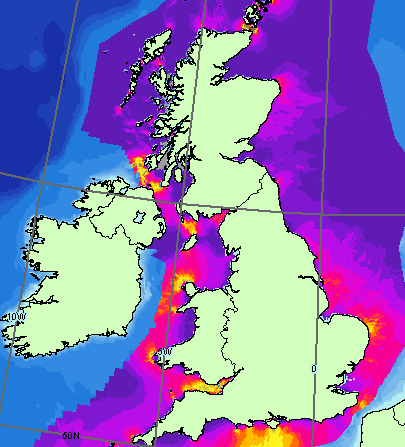
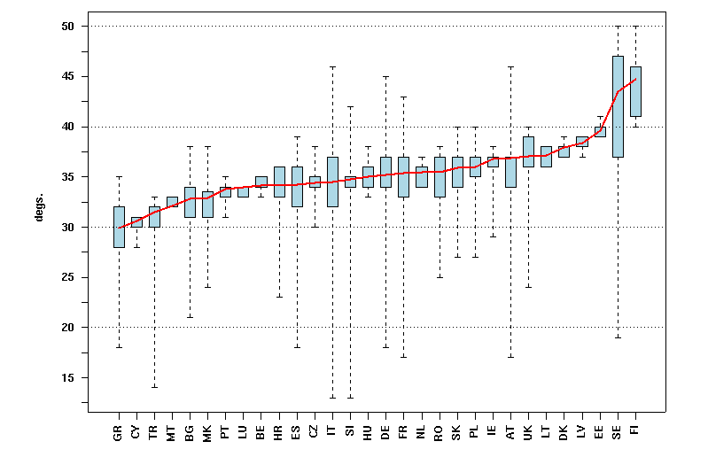

INSPIRE Infrastructure for Spatial Information in Europe
INSPIRE Infrastructure for Spatial Information in Europe
D2.8.III.20 Data Specification on Energy Resources – Technical Guidelines
Title |
D2.8.III.20 Data Specification on Energy Resources – Technical Guidelines |
Creator |
Temporary MIWP 2021-2024 sub-group 2.3.1 |
Date of publication |
2024-07-31 |
Subject |
INSPIRE Data Specification for the spatial data theme Energy Resources |
Publisher |
INSPIRE Maintenance and Implementation Group (MIG) |
Type |
Text |
Description |
This document describes the INSPIRE Data Specification for the spatial data theme Energy Resources |
Format |
AsciiDoc |
Licence |
|
Rights |
Public |
Identifier |
|
Changelog |
https://github.com/INSPIRE-MIF/technical-guidelines/releases/tag/v2024.2 |
Language |
en |
Relation |
Directive 2007/2/EC of the European Parliament and of the Council of 14 March 2007 establishing an Infrastructure for Spatial Information in the European Community (INSPIRE) |
Foreword
How to read the document?
This document describes the "INSPIRE data specification on Energy Resources – Technical Guidelines" version 3.0 as developed by the Thematic Working Group (TWG) Energy Resources using both natural and a conceptual schema language.
The data specification is based on a common template[1] used for all data specifications, which has been harmonised using the experience from the development of the Annex I, II and III data specifications.
This document provides guidelines for the implementation of the provisions laid down in the Implementing Rule for spatial data sets and services of the INSPIRE Directive. It also includes additional requirements and recommendations that, although not included in the Implementing Rule, are relevant to guarantee or to increase data interoperability.
Two executive summaries provide a quick overview of the INSPIRE data specification process in general, and the content of the data specification on Energy Resources in particular. We highly recommend that managers, decision makers, and all those new to the INSPIRE process and/or information modelling should read these executive summaries first.
The UML diagrams (in Chapter 5) offer a rapid way to see the main elements of the specifications and their relationships. The definition of the spatial object types, attributes, and relationships are included in the Feature Catalogue (also in Chapter 5). People having thematic expertise but not familiar with UML can fully understand the content of the data model focusing on the Feature Catalogue. Users might also find the Feature Catalogue especially useful to check if it contains the data necessary for the applications that they run. The technical details are expected to be of prime interest to those organisations that are responsible for implementing INSPIRE within the field of Energy Resources, but also to other stakeholders and users of the spatial data infrastructure.
The technical provisions and the underlying concepts are often illustrated by examples. Smaller examples are within the text of the specification, while longer explanatory examples and descriptions of selected use cases are attached in the annexes.
In order to distinguish the INSPIRE spatial data themes from the spatial object types, the INSPIRE spatial data themes are written in italics.
The document will be publicly available as a 'non-paper'. It does not represent an official position of the European Commission, and as such cannot be invoked in the context of legal procedures. |
Legal Notice
Neither the European Commission nor any person acting on behalf of the Commission is responsible for the use which might be made of this publication.
Interoperability of Spatial Data Sets and Services – General Executive Summary
The challenges regarding the lack of availability, quality, organisation, accessibility, and sharing of spatial information are common to a large number of policies and activities and are experienced across the various levels of public authority in Europe. In order to solve these problems it is necessary to take measures of coordination between the users and providers of spatial information. The Directive 2007/2/EC of the European Parliament and of the Council adopted on 14 March 2007 aims at establishing an Infrastructure for Spatial Information in the European Community (INSPIRE) for environmental policies, or policies and activities that have an impact on the environment.
INSPIRE is based on the infrastructures for spatial information that are created and maintained by the Member States. To support the establishment of a European infrastructure, Implementing Rules addressing the following components of the infrastructure have been specified: metadata, interoperability of spatial data sets (as described in Annexes I, II, III of the Directive) and spatial data services, network services, data and service sharing, and monitoring and reporting procedures.
INSPIRE does not require collection of new data. However, after the period specified in the Directive[2] Member States have to make their data available according to the Implementing Rules.
Interoperability in INSPIRE means the possibility to combine spatial data and services from different sources across the European Community in a consistent way without involving specific efforts of humans or machines. It is important to note that "interoperability" is understood as providing access to spatial data sets through network services, typically via Internet. Interoperability may be achieved by either changing (harmonising) and storing existing data sets or transforming them via services for publication in the INSPIRE infrastructure. It is expected that users will spend less time and efforts on understanding and integrating data when they build their applications based on data delivered in accordance with INSPIRE.
In order to benefit from the endeavours of international standardisation bodies and organisations established under international law their standards and technical means have been utilised and referenced, whenever possible.
To facilitate the implementation of INSPIRE, it is important that all stakeholders have the opportunity to participate in specification and development. For this reason, the Commission has put in place a consensus building process involving data users, and providers together with representatives of industry, research and government. These stakeholders, organised through Spatial Data Interest Communities (SDIC) and Legally Mandated Organisations (LMO)[3], have provided reference materials, participated in the user requirement and technical[4] surveys, proposed experts for the Data Specification Drafting Team[5], the Thematic Working Groups[6] and other ad-hoc cross-thematic technical groups and participated in the public stakeholder consultations on draft versions of the data specifications. These consultations covered expert reviews as well as feasibility and fitness-for-purpose testing of the data specifications[7].
This open and participatory approach was successfully used during the development of the data specifications on Annex I, II and III data themes as well as during the preparation of the Implementing Rule on Interoperability of Spatial Data Sets and Services[8] for Annex I spatial data themes and of its amendment regarding the themes of Annex II and III.
The development framework elaborated by the Data Specification Drafting Team aims at keeping the data specifications of the different themes coherent. It summarises the methodology to be used for the development of the data specifications, providing a coherent set of requirements and recommendations to achieve interoperability. The pillars of the framework are the following technical documents[9]:
-
The Definition of Annex Themes and Scope describes in greater detail the spatial data themes defined in the Directive, and thus provides a sound starting point for the thematic aspects of the data specification development.
-
The Generic Conceptual Model defines the elements necessary for interoperability and data harmonisation including cross-theme issues. It specifies requirements and recommendations with regard to data specification elements of common use, like the spatial and temporal schema, unique identifier management, object referencing, some common code lists, etc. Those requirements of the Generic Conceptual Model that are directly implementable are included in the Implementing Rule on Interoperability of Spatial Data Sets and Services.
-
The Methodology for the Development of Data Specifications defines a repeatable methodology. It describes how to arrive from user requirements to a data specification through a number of steps including use-case development, initial specification development and analysis of analogies and gaps for further specification refinement.
-
The Guidelines for the Encoding of Spatial Data defines how geographic information can be encoded to enable transfer processes between the systems of the data providers in the Member States. Even though it does not specify a mandatory encoding rule it sets GML (ISO 19136) as the default encoding for INSPIRE.
-
The Guidelines for the use of Observations & Measurements and Sensor Web Enablement-related standards in INSPIRE Annex II and III data specification development provides guidelines on how the "Observations and Measurements" standard (ISO 19156) is to be used within INSPIRE.
-
The Common data models are a set of documents that specify data models that are referenced by a number of different data specifications. These documents include generic data models for networks, coverages and activity complexes.
The structure of the data specifications is based on the "ISO 19131 Geographic information - Data product specifications" standard. They include the technical documentation of the application schema, the spatial object types with their properties, and other specifics of the spatial data themes using natural language as well as a formal conceptual schema language[10].
A consolidated model repository, feature concept dictionary, and glossary are being maintained to support the consistent specification development and potential further reuse of specification elements. The consolidated model consists of the harmonised models of the relevant standards from the ISO 19100 series, the INSPIRE Generic Conceptual Model, and the application schemas[11] developed for each spatial data theme. The multilingual INSPIRE Feature Concept Dictionary contains the definition and description of the INSPIRE themes together with the definition of the spatial object types present in the specification. The INSPIRE Glossary defines all the terms (beyond the spatial object types) necessary for understanding the INSPIRE documentation including the terminology of other components (metadata, network services, data sharing, and monitoring).
By listing a number of requirements and making the necessary recommendations, the data specifications enable full system interoperability across the Member States, within the scope of the application areas targeted by the Directive. The data specifications (in their version 3.0) are published as technical guidelines and provide the basis for the content of the Implementing Rule on Interoperability of Spatial Data Sets and Services[12]. The content of the Implementing Rule is extracted from the data specifications, considering short- and medium-term feasibility as well as cost-benefit considerations. The requirements included in the Implementing Rule are legally binding for the Member States according to the timeline specified in the INSPIRE Directive.
In addition to providing a basis for the interoperability of spatial data in INSPIRE, the data specification development framework and the thematic data specifications can be reused in other environments at local, regional, national and global level contributing to improvements in the coherence and interoperability of data in spatial data infrastructures.
Energy Resources – Executive Summary
Purpose
The INSPIRE Directive (2007/2/EC) defines the spatial data theme Energy Resources as the: "Energy Resources including hydrocarbons, hydropower, bio-energy, solar, wind, etc., where relevant including depth/height information on the extent of the resource." Energy Resources are included in Annex III with the aim of providing an essential thematic frame, allowing for the exchange of Energy Resources related spatial information across Europe in an interoperable way.
The effective planning and utilisation of energy resources is essential given that the availability of non-renewable energy resources is in decline and there is, as yet, limited utilisation of renewable energy resources. Also, given the growing global energy consumption increasing the dependency of society on energy as a whole, the sharing of data, both nationally and internationally, within a harmonised structure is critical.
The Energy Resources theme covers the mapping of historic, current and future energy resources covering the entire lifecycle of Energy Resources, irrespective of its viability in terms of economic, social and technological aspects. It takes into account resources that are depleted due to exploitation in the past and resources currently not viable but may become so in the future. Information about location and the potential of Energy Resources have a significant impact on the environment. This impact can have both positive and negative implications; therefore appropriate knowledge about the extent, distribution and volumes of the resources is of great value.
The main purpose therefore of this specification is to allow identification of geographical locations of each type of Energy Resource, providing information about their extent, distribution and volume (where possible and relevant) of the resource and also in providing relevant links to the other related domains.
The provision and implementation of this harmonised data specification should significantly contribute to the main priorities, targets and flagship initiatives of Europe 2020 strategy[13] within the mechanisms of establishing a European spatial data infrastructure.
Assumptions
The data specification scope is delineated by the theme definition and further elaborated, taking into consideration reference material and use cases provided by the stakeholders as well as identified by the members of the INSPIRE Thematic Working Group for Energy Resources (TWG ER). In addition, the document also reflects the contribution from public consultation and testing of the Data Specification of Energy Resources.
Detailed interpretation and description of the Energy Resources theme is transposed to the core of the data specification with possible extensions for specific sub-domain or national needs. The entire concept of the data specification is based on modelling needs to cover existing and potential Energy Resources. With this, a distinction between non-renewable (fossil fuels), renewable and waste Energy Resources had to be taken into consideration. Since in the real world certain types of Energy Resources occur as discrete features whilst other types are present everywhere, the need arises to model both feature as well as coverage spatial data representations.
A significant part of the detailed information under the domain covered by this theme falls within the private sector therefore aggregations and overview data are a focus of this data specification. Nevertheless, where possible, this data specification retains the possibility to exchange detailed information at a local level.
Finally, in some cases a single feature can represent both an Energy Resource as a spatial object defined in another INSPIRE theme. This data specification provides information how to ensure consistency and reduce multiplicities where cross-theme interrelationships exist.
Future
The main value of the INSPIRE Energy Resources data specification is in providing the framework for Energy Resources related spatial data exchange. In addition this framework is characterised by its versatile yet flexible structure. Data providers are thus able to publish their existing data in the most convenient way and users can easily discover, evaluate and use appropriate data for their specific needs. As soon as new generic or theme specific needs and requirements are identified, appropriate activities within the framework of INSPIRE implementation and maintenance[14] will have to take place.
Acknowledgements
Many individuals and organisations have contributed to the development of these Guidelines.
The Thematic Working Group Energy Resources (ER) included:
Martin Tuchyna (European Commission contact point, TWG Facilitator), Diederik Tirry (TWG Editor), Pablo Burgos Casado, Radoslav Chudy, Søren Elkjær Kristensen, Gijs Remmelts, Chris Rhodes, Peter Semrad, Marta Szabo, Marcel Suri and Lisa Thomas.
Other contributors to the INSPIRE data specifications are the Drafting Team Data Specifications, the JRC Data Specifications Team and the INSPIRE stakeholders - Spatial Data Interested Communities (SDICs) and Legally Mandated Organisations (LMOs).
Contact information
Maria Vanda Nunes de Lima & Michael Lutz
European Commission Joint Research Centre (JRC)
Institute for Environment and Sustainability
Unit H06: Digital Earth and Reference Data
http://inspire.ec.europa.eu/index.cfm/pageid/2
Table of contents
- 1. Scope
- 2. Overview
- 3. Specification scopes
- 4. Identification information
- 5. Data content and structure
- 5.1. Application schemas – Overview
- 5.2. Basic notions
- 5.3. Application schema Energy Resources
- 5.4. Application schema Energy Resources Base
- 5.5. Application schema Energy Resources Vector
- 5.5.1. Description
- 5.5.2. Feature catalogue
- 5.5.2.1. Spatial object types
- 5.5.2.2. Data types
- 5.5.2.3. Imported types (informative)
- 5.5.2.3.1. ClassificationAndQuantificationFrameworkValue
- 5.5.2.3.2. DateTime
- 5.5.2.3.3. FossilFuelClassValue
- 5.5.2.3.4. FossilFuelValue
- 5.5.2.3.5. GM_Object
- 5.5.2.3.6. GeographicalName
- 5.5.2.3.7. Identifier
- 5.5.2.3.8. Measure
- 5.5.2.3.9. RelatedParty
- 5.5.2.3.10. RenewableAndWasteValue
- 5.5.2.3.11. TM_Position
- 5.5.2.3.12. VerticalExtentType
- 5.5.3. Externally governed code lists
- 5.6. Application schema Energy Resources Coverage
- 5.7. Application schema Energy Statistics
- 6. Reference systems, units of measure and grids
- 7. Data quality
- 8. Dataset-level metadata
- 9. Delivery
- 9.1. Updates
- 9.2. Delivery medium
- 9.3. Encodings
- 9.3.1. Default Encoding(s)
- 9.3.1.1. Specific requirements for GML encoding
- 9.3.1.2. Default encoding(s) for application schema EnergyResourcesBase
- 9.3.1.3. Default encoding(s) for application schema EnergyResourcesVector
- 9.3.1.4. Default encoding(s) for application schema EnergyResourcesCoverage
- 9.3.1.5. Default encoding(s) for application schema Energy Statistics
- 9.3.2. Recommended Encoding(s)
- 9.3.1. Default Encoding(s)
- 9.4. Options for delivering coverage data
- 10. Data Capture
- 11. Portrayal
- Bibliography
- Annex A: Abstract Test Suite - (normative)
- A.1. Application Schema Conformance Class
- A.2. Reference Systems Conformance Class
- A.3. Data Consistency Conformance Class
- A.4. Metadata IR Conformance Class
- A.5. Information Accessibility Conformance Class
- A.6. Data Delivery Conformance Class
- A.7. Portrayal Conformance Class
- A.8. Technical Guideline Conformance Class
- A.8.1. Multiplicity test
- A.8.2. CRS http URI test
- A.8.3. Metadata encoding schema validation test
- A.8.4. Metadata occurrence test
- A.8.5. Metadata consistency test
- A.8.6. Encoding schema validation test
- A.8.7. Coverage multipart representation test
- A.8.8. Coverage domain consistency test
- A.8.9. Coverage range coding test
- A.8.10. TIFF conformity test
- A.8.11. TIFF data structure test
- A.8.12. TIFF range compression test
- A.8.13. TIFF grid coordinate system test
- A.8.14. . JPEG 2000 conformity test
- A.8.15. JPEG 2000 data structure test
- A.8.16. JPEG 2000 range compression test
- A.8.17. Style test
- Annex B: Use cases - (informative)
- Annex C: Code lists Values - (informative)
1. Scope
This document specifies a harmonised data specification for the spatial data theme Energy Resources as defined in Annex III of the INSPIRE Directive.
This data specification provides the basis for the drafting of Implementing Rules according to Article 7 (1) of the INSPIRE Directive [Directive 2007/2/EC]. The entire data specification is published as implementation guidelines accompanying these Implementing Rules.
2. Overview
2.1. Name
INSPIRE data specification for the theme Energy Resources.
2.2. Informal description
Definition:
Energy resources including hydrocarbons, hydropower, bio-energy, solar, wind, etc., where relevant including depth/height information on the extent of the resource. [Directive 2007/2/EC]
Description:
At a high level, and within the INSPIRE context, Energy Resources are features defining an inferred or observable spatial extent of a resource that can be, or has been, used as a source of energy [DER 2011].
The central concept of this theme is to provide a means for distributing and exchanging information on the spatial extent and type or classification of previous, current or potential sources of energy. Knowing the spatial representation and location of energy resources will allow data providers to provide information about the resource type, the quantification of the resource, the level of resource utilisation and a unified approach for units of measurement to data users.
There are different approaches to describe spatial features representing various types of Energy Resources. On the one hand the occurrence of Energy Resources can be considered as discrete, well-defined features, on the other hand properties of Energy Resources, and in particular renewable energy, can be assessed in a continuous way within a domain of interest. As a consequence of these two different approaches this specification covers both feature as well as coverage spatial data representations.
2.2.1. The importance of the Energy Resources Theme
Despite the occurrence of economic recessions, growing global energy consumption increases the dependency of society on energy as a whole. Whilst seeking solutions as to where and how to explore for alternative energy resources, it is important to keep in mind the need to deal with this increasing dependency now and in the future by using energy resources efficiently and by creating new or implementing existing initiatives. Moreover, the effective utilisation of energy resources is essential given that the availability of non-renewable energy resources is in decline and there is, as yet, limited utilisation of renewable energy resources.
The data specification for Energy Resources provides the mechanism to exchange and compare energy resources related information defined within a spatial context. By creating a standards based data-sharing model, wider and more complex dependencies placed upon energy resources and their related activities in different countries will be able to be identified. It will also provide an overview of the state of play of energy resources within the wider European context.
2.2.2. Scope of the Energy Resources Theme
The Energy Resources theme covers the mapping of historic, current and future energy resources alongside their primary characteristics. The concept of this theme is to provide focus to the resource aspect and the extent and distribution of the resources whilst also addressing aggregate information on energy statistics.
This theme covers the entire lifecycle of Energy Resources, irrespective of its viability in terms of economic, social and technological aspects. It takes into account resources that are depleted due to exploitation in the past and resources currently not viable but may become so in the future.
Energy resources are commonly divided into two main types: Primary and Secondary Energy. Primary energy is either extracted or captured directly from natural resources (such as coal, crude oil, wind or solar radiation) whereas Secondary energy (Energy Carriers) is the result of a conversion of primary or secondary energy types (see Figure 1). Electricity is one of the most common secondary energy types, being transformed from various primary energy sources such as coal, oil, natural gas, and wind. Although within the INSPIRE context only Primary Energy Resources are considered, links to the secondary energy form are allowed for through the connection via statistics.

Figure 1 – Transformation from Primary to Secondary Energy (Statistics Norway, 2008)
Considering the INSPIRE definition as well as the scope of the remaining INSPIRE themes, this theme addresses each of the subcategories of primary energy resources: non-renewable resources, renewable resources and waste.
-
Non-renewables: Natural resources which, due to long-term formation, cannot be produced, grown, generated, or used on a scale which can sustain its consumption rate. These resources, also known as fossil fuels (crude oil, coal, natural gas) and nuclear fuels, exist in a fixed amount, or are consumed much faster than nature can replenish them.
-
Renewables: Naturally occurring and theoretically inexhaustible source of energy that is not derived from fossil or nuclear fuel. Renewable resources are widely abundant all over the Earth, but their energy intensity per unit area is typically smaller compared to non-renewable resources. These resources comprise for instance wind, solar, hydropower and geothermal resources that may produce heat, (non-thermal) electricity and biofuels.
-
Waste is a fuel that may consist of many different materials coming from combustible industrial, institutional, hospital and household wastes such as rubber, plastics, waste fossil oils and other similar commodities. It is either solid or liquid in form, renewable or non-renewable, biodegradable or non-biodegradable.
Given that Nuclear fuels (Uranium and Thorium) are excluded from the energy resource types (see 2.2.3) and are modelled within the Mineral Resources data specification, this data specification addresses only the fossil fuel element of the non-renewable resources.
-
Fossil Fuels are a form of non-renewable primary energy formed by natural processes such as the anaerobic decomposition of buried dead organisms. Fossil fuels contain high percentages of carbon and include coal, crude oil, and natural gas.

Figure 2 - Scope delineation of the theme (Energy Statistics Manual, OECD/IEA, 2004)
2.2.3. Limits to the scope of the theme
Considering the INSPIRE definition of this theme scope the following exclusions have been made:
-
Secondary Energy Types e.g. electricity, are not included within this theme.
-
Energy use e.g. petrol consumption is not included within this theme.
-
Smart grids have been assessed but regarded as not relevant for this theme.
-
Storage of energy resources based on natural constructions (lakes for hydro, or empty natural reservoirs) have been assessed but regarded as not relevant for this theme.
-
Underground Coal Gasification (UCG) has not been explicitly defined within this theme since all coal resource areas are potentially UCG sites.
The Energy Resources theme definition is broad reaching and as such has correlations with other INSPIRE themes. Each correlation was assessed for inclusion within this theme on the basis of whether another theme had more significant relevance for the feature concerned and where duplication would be the least. Following discussions with the relevant Thematic Working Groups, it was concluded that the following features would not be covered within the Energy Resource theme. More information can be obtained within Chapter 5.
-
Uranium and Thorium as energy resource types are modelled within the Mineral Resources data specification. These elements are exploited together with other minerals and therefore more relevant to the Mineral Resources Data Specification.
-
The technical constructions for abstraction, transport and treatment, these are largely covered by Production and Industrial Facilities.
-
Basic data for wind and temperature distributions are modelled within the Atmospheric Conditions data specification.
-
Hydro-power plants are a candidate type inherited from the Annex I Hydrography specification. It was decided that this feature is not within the scope of this theme.
-
Aerothermal energy resource is covered by the Atmospheric Conditions theme.
-
Although an energy resource type of biogas can be derived from a landfill feature type (currently modelled within Production and Industrial Facilities), biogas is retained within the Energy Resources code lists in order that it is possible to define a future area of interest with an estimation of the energy production value.
2.2.4. Data specification process
This Data Specification is defined following the requirements of the INSPIRE Directive and the Commission Regulation implementing Directive 2007/2/EC of the European Parliament and of the Council with regards to the interoperability of spatial data sets and services. The INSPIRE data specification on Energy Resources was prepared following the participatory process of consensus building. The stakeholders, based on their registration as Spatial Data Interest Communities (SDICs) or Legally Mandated Organisations (LMOs)[15] had the opportunity to bring forward user requirements and reference materials. They also proposed experts for the Thematic Working Groups (TWGs) responsible for the specification development and participated in the consultation (review) and testing of the data specifications. TWG ER was composed of experts from Belgium, Hungary, Netherlands, Norway, Spain, Slovakia, the United Kingdom and the European Commission.
The specification process took place according to the methodology detailed for INSPIRE respecting the requirements and the recommendations of the INSPIRE Generic Conceptual Model, which is one of the elements that ensures a coherent approach and a cross theme consistency.
In order to delineate the scope of the energy resources theme, relevant legislative framework was reviewed. This approach to reuse established information exchange agreements was chosen in order to reduce any additional burden on the related communities. The most relevant guiding reference with regard to Energy Resources in Europe is the Energy Statistics Regulation EC 1099/2008 which provides generic domain coverage and a basis for the extent of the scope for the energy resources theme. Energy statistics are often used to communicate energy resources related information to the various communities.
Definition: Energy resources including hydrocarbons, hydropower, bio-energy, solar, wind, etc., where relevant including depth/height information on the extent of the resource. Description: Energy Resources in INSPRE covers historic, current and future energy resources and the entire lifecycle of energy resources, irrespective of its viability in terms of economic, social and technological aspects. It takes into account resources that are depleted due to exploitation in the past and resources currently not viable but may become so in the future. Information about location and the potential of energy resources have a significant impact on the environment. This impact can have both positive and negative implications, therefore appropriate knowledge about the extent, distribution and volumes of the resources is of great value. There is a main distinction between fossil fuels and renewable energy resources. The concept of energy resources provides focus to the resource aspect and the extent/distribution of the resources. Energy use, e.g. petrol consumption, is not covered by this theme. Fossil fuel resources include oil accumulation, natural gas accumulations, coal, lignite or peat deposits and Uranium ore deposits. Renewable energy resources include Hydropower in which water resources mapped according to energy potential. Bio-energy resources contains forest resources, cereals or agricultural residues which can be used for energy purposes, Wind energy - estimated by wind measurement together with topographical information. Geothermal energy the natural heat flow is of high interest as a renewable and clean energy source. Entry in the INSPIRE registry: http://inspire.ec.europa.eu/theme/ef/ |
2.3. Normative References
[Directive 2007/2/EC] Directive 2007/2/EC of the European Parliament and of the Council of 14 March 2007 establishing an Infrastructure for Spatial Information in the European Community (INSPIRE)
[ISO 19107] EN ISO 19107:2005, Geographic Information – Spatial Schema
[ISO 19108] EN ISO 19108:2005, Geographic Information – Temporal Schema
[ISO 19108-c] ISO 19108:2002/Cor 1:2006, Geographic Information – Temporal Schema, Technical Corrigendum 1
[ISO 19111] EN ISO 19111:2007 Geographic information - Spatial referencing by coordinates (ISO 19111:2007)
[ISO 19113] EN ISO 19113:2005, Geographic Information – Quality principles
[ISO 19115] EN ISO 19115:2005, Geographic information – Metadata (ISO 19115:2003)
[ISO 19118] EN ISO 19118:2006, Geographic information – Encoding (ISO 19118:2005)
[ISO 19123] EN ISO 19123:2007, Geographic Information – Schema for coverage geometry and functions
[ISO 19125-1] EN ISO 19125-1:2004, Geographic Information – Simple feature access – Part 1: Common architecture
[ISO 19135] EN ISO 19135:2007 Geographic information – Procedures for item registration (ISO 19135:2005)
[ISO 19138] ISO/TS 19138:2006, Geographic Information – Data quality measures
[ISO 19139] ISO/TS 19139:2007, Geographic information – Metadata – XML schema implementation
[ISO 19157] ISO/DIS 19157, Geographic information – Data quality
[OGC 06-103r4] Implementation Specification for Geographic Information - Simple feature access – Part 1: Common Architecture v1.2.1
NOTE This is an updated version of "EN ISO 19125-1:2004, Geographic information – Simple feature access – Part 1: Common architecture".
[Regulation 1205/2008/EC] Regulation 1205/2008/EC implementing Directive 2007/2/EC of the European Parliament and of the Council as regards metadata
[Regulation 976/2009/EC] Commission Regulation (EC) No 976/2009 of 19 October 2009 implementing Directive 2007/2/EC of the European Parliament and of the Council as regards the Network Services
[Regulation 1089/2010/EC] Commission Regulation (EU) No 1089/2010 of 23 November 2010 implementing Directive 2007/2/EC of the European Parliament and of the Council as regards interoperability of spatial data sets and services
[Regulation 1099/2008/EC] Commission Regulation (EC) No 1099/2008 of the European Parliament and of the Council of 22 October 2008 on energy statistics of 22 October 2008
2.4. Terms and definitions
General terms and definitions helpful for understanding the INSPIRE data specification documents are defined in the INSPIRE Glossary[16].
Specifically, for the theme Energy Resources, the following terms are defined:
-
Energy resource
means a concentration or occurrence of an energy source which may have been present, is present or may be present in the future.
-
Fossil fuels
means a form of non-renewable primary energy formed by natural processes such as the anaerobic decomposition of buried dead organisms, which contains high percentages of carbon and includes coal, crude oil, and natural gas.
-
Primary energy
means energy that has not been subjected to any conversion or transformation process.
-
Non-renewable energy
means natural resources which, due to long-term formation, cannot be produced, grown, generated, or used on a scale which can sustain its consumption rate.
-
Energy from renewable sources
means energy from renewable non-fossil sources, namely wind, solar, aerothermal, geothermal, hydrothermal and ocean energy, hydropower, biomass, landfill gas, sewage treatment plant gas and biogases, in accordance with Article 2 of Directive 2009/28/EC of the European Parliament and of the Council[17].
-
Waste as energy resources
means a fuel that may consist of many different materials coming from combustible industrial, institutional, hospital and household waste such as rubber, plastics, waste fossil oils and other similar commodities. It is either solid or liquid in form, renewable or non-renewable, biodegradable or non-biodegradable.
2.5. Symbols and abbreviations
AAPG |
American Association of Petroleum Geologists |
AONB |
Areas of Outstanding Natural Beauty |
ATS |
Abstract Test Suite |
CDP |
County Development Plan |
CPV |
Concentrated Photovoltaics |
CSP |
Concentrated Solar Power |
DNI |
Direct Normal Irradiation / Direct Normal Irradiance |
EC |
European Commission |
EC |
European Commission |
EEA |
European Energy Agency |
EEA |
European Environmental Agency |
EFG |
European Federation of Geologists |
ER |
Energy Resources |
ETRS |
European Terrestrial Reference System |
ETRS89 |
European Terrestrial Reference System 1989 |
ETRS89-LAEA |
Lambert Azimuthal Equal Area |
EVRS |
European Vertical Reference System |
GCM |
General Conceptual Model |
GHI |
Global Horizontal Irradiance |
GML |
Geography Markup Language |
GSL |
Geological Society of London |
IEA |
International Energy Agency |
IGI |
Institute of Geologists of Ireland |
INSPIRE |
Infrastructure for Spatial Information in the European Community |
IoM3 |
Institute of Materials, Minerals and Mining |
IPCC |
Intergovernmental Panel on Climate Change |
IR |
Implementing Rules |
IR |
Implementing Rule |
ISDSS |
Interoperability of Spatial Data Sets and Services |
ISO |
International Organization for Standardization |
ITRS |
International Terrestrial Reference System |
JRC |
Joint Research Centre |
LAT |
Lowest Astronomical Tide |
LMO |
Legally Mandated Organisation |
NPD |
Norwegian Petroleum Directorate |
OECD |
Organisation for Economic Co-operation and Development |
PERC |
Pan-European Code for Reporting of Exploration Results, Mineral Resources and Reserves |
PV |
Photovoltaic |
PVGIS |
Photovoltaic Geographic Information System |
SAC |
Special Area of Conservation |
SDIC |
Spatial Data Interest Community |
SPA |
Special Protection Areas |
SPE |
Society of Petroleum Engineers |
TG |
Technical Guidelines |
TG |
Technical Guidance |
TWG |
Thematic Working Group |
UCG |
Underground Coal Gasification |
UML |
Unified Modeling Language |
UNFC |
United Nations Framework Classification |
USGS |
United States Geological Survey |
UTC |
Coordinated Universal Time |
WHO |
World Health Organization |
WMO |
World Meteorological Organization |
WPC |
World Petroleum Council |
XML |
EXtensible Markup Language |
2.6. How the Technical Guidelines map to the Implementing Rules
The schematic diagram in Figure 3 gives an overview of the relationships between the INSPIRE legal acts (the INSPIRE Directive and Implementing Rules) and the INSPIRE Technical Guidelines. The INSPIRE Directive and Implementing Rules include legally binding requirements that describe, usually on an abstract level, what Member States must implement.
In contrast, the Technical Guidelines define how Member States might implement the requirements included in the INSPIRE Implementing Rules. As such, they may include non-binding technical requirements that must be satisfied if a Member State data provider chooses to conform to the Technical Guidelines. Implementing these Technical Guidelines will maximise the interoperability of INSPIRE spatial data sets.

Figure 3 - Relationship between INSPIRE Implementing Rules and Technical Guidelines
2.6.1. Requirements
The purpose of these Technical Guidelines (Data specifications on Energy Resources) is to provide practical guidance for implementation that is guided by, and satisfies, the (legally binding) requirements included for the spatial data theme Energy Resources in the Regulation (Implementing Rules) on interoperability of spatial data sets and services. These requirements are highlighted in this document as follows:
|
📕
|
IR Requirement This style is used for requirements contained in the Implementing Rules on interoperability of spatial data sets and services (Commission Regulation (EU) No 1089/2010). |
For each of these IR requirements, these Technical Guidelines contain additional explanations and examples.
NOTE The Abstract Test Suite (ATS) in Annex A contains conformance tests that directly check conformance with these IR requirements.
Furthermore, these Technical Guidelines may propose a specific technical implementation for satisfying an IR requirement. In such cases, these Technical Guidelines may contain additional technical requirements that need to be met in order to be conformant with the corresponding IR requirement when using this proposed implementation. These technical requirements are highlighted as follows:
|
📒
|
TG Requirement X This style is used for requirements for a specific technical solution proposed in these Technical Guidelines for an IR requirement. |
NOTE 1 Conformance of a data set with the TG requirement(s) included in the ATS implies conformance with the corresponding IR requirement(s).
NOTE 2 In addition to the requirements included in the Implementing Rules on interoperability of spatial data sets and services, the INSPIRE Directive includes further legally binding obligations that put additional requirements on data providers. For example, Art. 10(2) requires that Member States shall, where appropriate, decide by mutual consent on the depiction and position of geographical features whose location spans the frontier between two or more Member States. General guidance for how to meet these obligations is provided in the INSPIRE framework documents.
2.6.2. Recommendations
In addition to IR and TG requirements, these Technical Guidelines may also include a number of recommendations for facilitating implementation or for further and coherent development of an interoperable infrastructure.
|
📘
|
Recommendation X Recommendations are shown using this style. |
NOTE The implementation of recommendations is not mandatory. Compliance with these Technical Guidelines or the legal obligation does not depend on the fulfilment of the recommendations.
2.6.3. Conformance
Annex A includes the abstract test suite for checking conformance with the requirements included in these Technical Guidelines and the corresponding parts of the Implementing Rules (Commission Regulation (EU) No 1089/2010).
3. Specification scopes
This data specification does not distinguish different specification scopes, but just considers one general scope.
NOTE For more information on specification scopes, see [ISO 19131:2007], clause 8 and Annex D.
4. Identification information
These Technical Guidelines are identified by the following URI:
NOTE ISO 19131 suggests further identification information to be included in this section, e.g. the title, abstract or spatial representation type. The proposed items are already described in the document metadata, executive summary, overview description (section 2) and descriptions of the application schemas (section 5). In order to avoid redundancy, they are not repeated here.
5. Data content and structure
5.1. Application schemas – Overview
5.1.1. Application schemas included in the IRs
Articles 3, 4 and 5 of the Implementing Rules lay down the requirements for the content and structure of the data sets related to the INSPIRE Annex themes.
|
📕
|
IR Requirement
|
The types to be used for the exchange and classification of spatial objects from data sets related to the spatial data theme Energy Resources are defined in the following application schemas (see sections 5.4; 5.5; 5.6):
-
The Energy Resources Base application schema provides a base set of common Energy Resource classes including coded values for the classification of Energy Resources that fall within the scope of this theme.
-
The Energy Resources Vector application schema provides the means for modelling discrete spatial features representing fossil fuels and renewables.
-
The Energy Resources Coverage application schema provides a simple scheme for assessing the variation of energy potential of renewable resources including waste.
The application schemas specify requirements on the properties of each spatial object including its multiplicity, domain of valid values, constraints, etc.
NOTE The application schemas presented in this section contain some additional information that is not included in the Implementing Rules, in particular multiplicities of attributes and association roles.
|
📒
|
TG Requirement 1 Spatial object types and data types shall comply with the multiplicities defined for the attributes and association roles in this section. |
An application schema may include references (e.g. in attributes or inheritance relationships) to common types or types defined in other spatial data themes. These types can be found in a sub-section called "Imported Types" at the end of each application schema section. The common types referred to from application schemas included in the IRs are addressed in Article 3.
|
📕
|
IR Requirement Types that are common to several of the themes listed in Annexes I, II and III to Directive 2007/2/EC shall conform to the definitions and constraints and include the attributes and association roles set out in Annex I. |
NOTE Since the IRs contain the types for all INSPIRE spatial data themes in one document, Article 3 does not explicitly refer to types defined in other spatial data themes, but only to types defined in external data models.
Common types are described in detail in the Generic Conceptual Model [DS-D2.7], in the relevant international standards (e.g. of the ISO 19100 series) or in the documents on the common INSPIRE models [DS-D2.10.x]. For detailed descriptions of types defined in other spatial data themes, see the corresponding Data Specification TG document [DS-D2.8.x].
5.1.2. Additional recommended application schemas
In addition to the application schemas listed above, the following additional application schemas have been defined for the theme Energy Resources (see section 5.7):
-
The Energy Statistics application schema targets the exchange of aggregated data (statistical information) on the quantification of energy resources. It is expected that detailed information on the amount of resources is to a large extent private commercial information. For this reason this application scheme should be considered as a guideline.
These additional application schemas are not included in the IRs. They typically address requirements from specific (groups of) use cases and/or may be used to provide additional information. They are included in this specification in order to improve interoperability also for these additional aspects and to illustrate the extensibility of the application schemas included in the IRs.
|
📘
|
Recomendation 1 Additional and/or use case-specific information related to the theme Energy Resources should be made available using the spatial object types and data types specified in the following application schema(s): Energy Statistics These spatial object types and data types should comply with the definitions and constraints and include the attributes and association roles defined in this section. The code lists used in attributes or association roles of spatial object types or data types should comply with the definitions and include the values defined in this section. |
5.2. Basic notions
This section explains some of the basic notions used in the INSPIRE application schemas. These explanations are based on the GCM [DS-D2.5].
5.2.1. Notation
5.2.1.1. Unified Modeling Language (UML)
The application schemas included in this section are specified in UML, version 2.1. The spatial object types, their properties and associated types are shown in UML class diagrams.
NOTE For an overview of the UML notation, see Annex D in [ISO 19103].
The use of a common conceptual schema language (i.e. UML) allows for an automated processing of application schemas and the encoding, querying and updating of data based on the application schema – across different themes and different levels of detail.
The following important rules related to class inheritance and abstract classes are included in the IRs.
|
📕
|
IR Requirement (…)
|
The use of UML conforms to ISO 19109 8.3 and ISO/TS 19103 with the exception that UML 2.1 instead of ISO/IEC 19501 is being used. The use of UML also conforms to ISO 19136 E.2.1.1.1-E.2.1.1.4.
NOTE ISO/TS 19103 and ISO 19109 specify a profile of UML to be used in conjunction with the ISO 19100 series. This includes in particular a list of stereotypes and basic types to be used in application schemas. ISO 19136 specifies a more restricted UML profile that allows for a direct encoding in XML Schema for data transfer purposes.
To model constraints on the spatial object types and their properties, in particular to express data/data set consistency rules, OCL (Object Constraint Language) is used as described in ISO/TS 19103, whenever possible. In addition, all constraints are described in the feature catalogue in English, too.
NOTE Since "void" is not a concept supported by OCL, OCL constraints cannot include expressions to test whether a value is a void value. Such constraints may only be expressed in natural language.
5.2.1.2. Stereotypes
In the application schemas in this section several stereotypes are used that have been defined as part of a UML profile for use in INSPIRE [DS-D2.5]. These are explained in Table 1 below.
Table 1 – Stereotypes (adapted from [DS-D2.5])
| Stereotype | Model element | Description |
|---|---|---|
applicationSchema |
Package |
An INSPIRE application schema according to ISO 19109 and the Generic Conceptual Model. |
leaf |
Package |
A package that is not an application schema and contains no packages. |
featureType |
Class |
A spatial object type. |
type |
Class |
A type that is not directly instantiable, but is used as an abstract collection of operation, attribute and relation signatures. This stereotype should usually not be used in INSPIRE application schemas as these are on a different conceptual level than classifiers with this stereotype. |
dataType |
Class |
A structured data type without identity. |
union |
Class |
A structured data type without identity where exactly one of the properties of the type is present in any instance. |
codeList |
Class |
A code list. |
import |
Dependency |
The model elements of the supplier package are imported. |
voidable |
Attribute, association role |
A voidable attribute or association role (see section 5.2.2). |
lifeCycleInfo |
Attribute, association role |
If in an application schema a property is considered to be part of the life-cycle information of a spatial object type, the property shall receive this stereotype. |
version |
Association role |
If in an application schema an association role ends at a spatial object type, this stereotype denotes that the value of the property is meant to be a specific version of the spatial object, not the spatial object in general. |
5.2.2. Voidable characteristics
The «voidable» stereotype is used to characterise those properties of a spatial object that may not be present in some spatial data sets, even though they may be present or applicable in the real world. This does not mean that it is optional to provide a value for those properties.
For all properties defined for a spatial object, a value has to be provided – either the corresponding value (if available in the data set maintained by the data provider) or the value of void. A void value shall imply that no corresponding value is contained in the source spatial data set maintained by the data provider or no corresponding value can be derived from existing values at reasonable costs.
|
📘
|
Recomendation 2 The reason for a void value should be provided where possible using a listed value from the VoidReasonValue code list to indicate the reason for the missing value. |
The VoidReasonValue type is a code list, which includes the following pre-defined values:
-
Unpopulated: The property is not part of the dataset maintained by the data provider. However, the characteristic may exist in the real world. For example when the "elevation of the water body above the sea level" has not been included in a dataset containing lake spatial objects, then the reason for a void value of this property would be 'Unpopulated'. The property receives this value for all spatial objects in the spatial data set.
-
Unknown: The correct value for the specific spatial object is not known to, and not computable by the data provider. However, a correct value may exist. For example when the "elevation of the water body above the sea level" of a certain lake has not been measured, then the reason for a void value of this property would be 'Unknown'. This value is applied only to those spatial objects where the property in question is not known.
-
Withheld: The characteristic may exist, but is confidential and not divulged by the data provider.
NOTE It is possible that additional reasons will be identified in the future, in particular to support reasons / special values in coverage ranges.
The «voidable» stereotype does not give any information on whether or not a characteristic exists in the real world. This is expressed using the multiplicity:
-
If a characteristic may or may not exist in the real world, its minimum cardinality shall be defined as 0. For example, if an Address may or may not have a house number, the multiplicity of the corresponding property shall be 0..1.
-
If at least one value for a certain characteristic exists in the real world, the minimum cardinality shall be defined as 1. For example, if an Administrative Unit always has at least one name, the multiplicity of the corresponding property shall be 1..*.
In both cases, the «voidable» stereotype can be applied. In cases where the minimum multiplicity is 0, the absence of a value indicates that it is known that no value exists, whereas a value of void indicates that it is not known whether a value exists or not.
EXAMPLE If an address does not have a house number, the corresponding Address object should not have any value for the «voidable» attribute house number. If the house number is simply not known or not populated in the data set, the Address object should receive a value of void (with the corresponding void reason) for the house number attribute.
5.2.3. Code lists
Code lists are modelled as classes in the application schemas. Their values, however, are managed outside of the application schema.
5.2.3.1. Code list types
The IRs distinguish the following types of code lists.
|
📕
|
IR Requirement
|
The type of code list is represented in the UML model through the tagged value extensibility, which can take the following values:
-
none, representing code lists whose allowed values comprise only the values specified in the IRs (type a);
-
narrower, representing code lists whose allowed values comprise the values specified in the IRs and narrower values defined by data providers (type b);
-
open, representing code lists whose allowed values comprise the values specified in the IRs and additional values at any level defined by data providers (type c); and
-
any, representing code lists, for which the IRs do not specify any allowed values, i.e. whose allowed values comprise any values defined by data providers (type d).
|
📘
|
Recomendation 3 Additional values defined by data providers should not replace or redefine any value already specified in the IRs. |
NOTE This data specification may specify recommended values for some of the code lists of type (b), (c) and (d) (see section 5.2.4.3). These recommended values are specified in a dedicated Annex.
In addition, code lists can be hierarchical, as explained in Article 6(2) of the IRs.
|
📕
|
IR Requirement (…)
|
The type of code list and whether it is hierarchical or not is also indicated in the feature catalogues.
5.2.3.2. Obligations on data providers
|
📕
|
IR Requirement (….)
|
Article 6(4) obliges data providers to use only values that are allowed according to the specification of the code list. The "allowed values according to the specification of the code list" are the values explicitly defined in the IRs plus (in the case of code lists of type (b), (c) and (d)) additional values defined by data providers.
For attributes whose type is a code list of type (b), (c) or (d) data providers may use additional values that are not defined in the IRs. Article 6(3) requires that such additional values and their definition be made available in a register. This enables users of the data to look up the meaning of the additional values used in a data set, and also facilitates the re-use of additional values by other data providers (potentially across Member States).
NOTE Guidelines for setting up registers for additional values and how to register additional values in these registers is still an open discussion point between Member States and the Commission.
5.2.3.3. Recommended code list values
For code lists of type (b), (c) and (d), this data specification may propose additional values as a recommendation (in a dedicated Annex). These values will be included in the INSPIRE code list register. This will facilitate and encourage the usage of the recommended values by data providers since the obligation to make additional values defined by data providers available in a register (see section 5.2.4.2) is already met.
|
📘
|
Recomendation 4 Where these Technical Guidelines recommend values for a code list in addition to those specified in the IRs, these values should be used. |
NOTE For some code lists of type (d), no values may be specified in these Technical Guidelines. In these cases, any additional value defined by data providers may be used.
5.2.3.4. Governance
The following two types of code lists are distinguished in INSPIRE:
-
Code lists that are governed by INSPIRE (INSPIRE-governed code lists). These code lists will be managed centrally in the INSPIRE code list register. Change requests to these code lists (e.g. to add, deprecate or supersede values) are processed and decided upon using the INSPIRE code list register’s maintenance workflows.
INSPIRE-governed code lists will be made available in the INSPIRE code list register at http://inspire.ec.europa.eu/codelist/<CodeListName>. They will be available in SKOS/RDF, XML and HTML. The maintenance will follow the procedures defined in ISO 19135. This means that the only allowed changes to a code list are the addition, deprecation or supersession of values, i.e. no value will ever be deleted, but only receive different statuses (valid, deprecated, superseded). Identifiers for values of INSPIRE-governed code lists are constructed using the pattern http://inspire.ec.europa.eu/codelist/<CodeListName>/<value>.
-
Code lists that are governed by an organisation outside of INSPIRE (externally governed code lists). These code lists are managed by an organisation outside of INSPIRE, e.g. the World Meteorological Organization (WMO) or the World Health Organization (WHO). Change requests to these code lists follow the maintenance workflows defined by the maintaining organisations. Note that in some cases, no such workflows may be formally defined.
Since the updates of externally governed code lists is outside the control of INSPIRE, the IRs and these Technical Guidelines reference a specific version for such code lists.
The tables describing externally governed code lists in this section contain the following columns:
-
The Governance column describes the external organisation that is responsible for maintaining the code list.
-
The Source column specifies a citation for the authoritative source for the values of the code list. For code lists, whose values are mandated in the IRs, this citation should include the version of the code list used in INSPIRE. The version can be specified using a version number or the publication date. For code list values recommended in these Technical Guidelines, the citation may refer to the "latest available version".
-
In some cases, for INSPIRE only a subset of an externally governed code list is relevant. The subset is specified using the Subset column.
-
The Availability column specifies from where (e.g. URL) the values of the externally governed code list are available, and in which formats. Formats can include machine-readable (e.g. SKOS/RDF, XML) or human-readable (e.g. HTML, PDF) ones.
Code list values are encoded using http URIs and labels. Rules for generating these URIs and labels are specified in a separate table.
-
|
📘
|
Recomendation 5 The http URIs and labels used for encoding code list values should be taken from the INSPIRE code list registry for INSPIRE-governed code lists and generated according to the relevant rules specified for externally governed code lists. |
NOTE Where practicable, the INSPIRE code list register could also provide http URIs and labels for externally governed code lists.
5.2.3.5. Vocabulary
For each code list, a tagged value called "vocabulary" is specified to define a URI identifying the values of the code list. For INSPIRE-governed code lists and externally governed code lists that do not have a persistent identifier, the URI is constructed following the pattern http://inspire.ec.europa.eu/codelist/<UpperCamelCaseName>;.
If the value is missing or empty, this indicates an empty code list. If no sub-classes are defined for this empty code list, this means that any code list may be used that meets the given definition.
An empty code list may also be used as a super-class for a number of specific code lists whose values may be used to specify the attribute value. If the sub-classes specified in the model represent all valid extensions to the empty code list, the subtyping relationship is qualified with the standard UML constraint "\{complete,disjoint}".
5.2.4. Identifier management
|
📕
|
IR Requirement
|
NOTE 1 An external object identifier is a unique object identifier which is published by the responsible body, which may be used by external applications to reference the spatial object. [DS-D2.5]
NOTE 2 Article 9(1) is implemented in each application schema by including the attribute inspireId of type Identifier.
NOTE 3 Article 9(2) is ensured if the namespace and localId attributes of the Identifier remains the same for different versions of a spatial object; the version attribute can of course change.
5.2.5. Geometry representation
|
📕
|
IR Requirement
|
NOTE 1 The specification restricts the spatial schema to 0-, 1-, 2-, and 2.5-dimensional geometries where all curve interpolations are linear and surface interpolations are performed by triangles.
NOTE 2 The topological relations of two spatial objects based on their specific geometry and topology properties can in principle be investigated by invoking the operations of the types defined in ISO 19107 (or the methods specified in EN ISO 19125-1).
5.2.6. Temporality representation
The application schema(s) use(s) the derived attributes "beginLifespanVersion" and "endLifespanVersion" to record the lifespan of a spatial object.
The attributes "beginLifespanVersion" specifies the date and time at which this version of the spatial object was inserted or changed in the spatial data set. The attribute "endLifespanVersion" specifies the date and time at which this version of the spatial object was superseded or retired in the spatial data set.
NOTE 1 The attributes specify the beginning of the lifespan of the version in the spatial data set itself, which is different from the temporal characteristics of the real-world phenomenon described by the spatial object. This lifespan information, if available, supports mainly two requirements: First, knowledge about the spatial data set content at a specific time; second, knowledge about changes to a data set in a specific time frame. The lifespan information should be as detailed as in the data set (i.e., if the lifespan information in the data set includes seconds, the seconds should be represented in data published in INSPIRE) and include time zone information.
NOTE 2 Changes to the attribute "endLifespanVersion" does not trigger a change in the attribute "beginLifespanVersion".
|
📕
|
IR Requirement (…)
|
NOTE The requirement expressed in the IR Requirement above will be included as constraints in the UML data models of all themes.
|
📘
|
Recomendation 6 If life-cycle information is not maintained as part of the spatial data set, all spatial objects belonging to this data set should provide a void value with a reason of "unpopulated". |
5.2.6.1. Validity of the real-world phenomena
The application schema(s) use(s) the attributes "validFrom" and "validTo" to record the validity of the real-world phenomenon represented by a spatial object.
The attributes "validFrom" specifies the date and time at which the real-world phenomenon became valid in the real world. The attribute "validTo" specifies the date and time at which the real-world phenomenon is no longer valid in the real world.
Specific application schemas may give examples what "being valid" means for a specific real-world phenomenon represented by a spatial object.
|
📕
|
IR Requirement (…)
|
NOTE The requirement expressed in the IR Requirement above will be included as constraints in the UML data models of all themes.
5.2.7. Coverages
Coverage functions are used to describe characteristics of real-world phenomena that vary over space and/or time. Typical examples are temperature, elevation, precipitation, imagery. A coverage contains a set of such values, each associated with one of the elements in a spatial, temporal or spatio-temporal domain. Typical spatial domains are point sets (e.g. sensor locations), curve sets (e.g. isolines), grids (e.g. orthoimages, elevation models), etc.
In INSPIRE application schemas, coverage functions are defined as properties of spatial object types where the type of the property value is a realisation of one of the types specified in ISO 19123.
To improve alignment with coverage standards on the implementation level (e.g. ISO 19136 and the OGC Web Coverage Service) and to improve the cross-theme harmonisation on the use of coverages in INSPIRE, an application schema for coverage types is included in the Generic Conceptual Model in 9.9.4. This application schema contains the following coverage types:
-
RectifiedGridCoverage: coverage whose domain consists of a rectified grid – a grid for which there is an affine transformation between the grid coordinates and the coordinates of a coordinate reference system (see Figure 4, left).
-
ReferenceableGridCoverage: coverage whose domain consists of a referenceable grid – a grid associated with a transformation that can be used to convert grid coordinate values to values of coordinates referenced to a coordinate reference system (see Figure 4, right).
In addition, some themes make reference to the types TimeValuePair and Timeseries defined in Taylor, Peter (ed.), OGC® WaterML 2.0: Part 1 – Timeseries, v2.0.0, Open Geospatial Consortium, 2012. These provide a representation of the time instant/value pairs, i.e. time series (see Figure 5).
Where possible, only these coverage types (or a subtype thereof) are used in INSPIRE application schemas.
(Source: ISO 19136:2007) |
(Source: GML 3.3.0) |
Figure 4 – Examples of a rectified grid (left) and a referenceable grid (right)
Figure 5 – Example of a time series
5.3. Application schema Energy Resources
5.3.1. Description
In this section a brief overview is given of the composition of the Energy Resources model, which is based on four application schema packages.
5.3.1.1. Narrative description
The Energy Resources UML model is structured as four separate application schemas which are created to represent the different approaches to model Energy Resources. The Energy Resources Vector, Energy Resources Coverage and the Energy Statistics application schemas depend on the Energy Resources Base application schema, which provides a base set of common Energy Resource classes including coded values for the classification of fossil fuel, renewable and waste Energy Resources. The dependencies between the application schemas are illustrated in Figure 6.
Figure 6 also illustrates the dependencies between the different Energy Resources application schemas and other packages:
-
The Base Types application schema from the Generic Conceptual Model, and the Annex I theme 'Geographical Names' data type are used.
-
The Energy Resources Coverage application schema is based on the Generic Coverage (Domain and Range) model defined in the INSPIRE Generic Conceptual Model.
The four Energy Resources application schemas together define a general model that supports the identification and description of a wide range of spatial objects that represent various energy resources or derived aggregated statistical information.
5.3.1.2. UML Overview

Figure 6 – Package structure of the Energy Resources application schemas
5.4. Application schema Energy Resources Base
5.4.1. Description
5.4.1.1. Narrative description
The Energy Resources Base application schema provides a core set of Energy Resource types that define common classes and characteristics used in other application schemas of the Energy Resources theme.
The use of a pre-existing classification system for Energy Resources is not feasible as there is little consistency across member states for how energy from different sources is classified. For example, coal types are often based upon the calorific range, the rank, moisture content, use or indeed a mixture of these characteristics. The widest disparity across Member States is that of the sub-bituminous class of coal and whether it is reported within the hard coal category or within the brown or low rank coal categories. Within this specification the type values for fossil fuels are purposefully broad and of the highest level in order to enable the sharing of this data. With respect to coal specifically, the classification has been taken from the World Coal Association (see Figure 7) and the definitions enhanced with calorific values to clearly define the bounds and contents of each sub type.

Figure 7 – Types and uses of coal (World Coal Association, 2012).
The base application schema includes coded values for the identification, classification and quantification of Energy Resources that fall within the scope of this theme. As there is no unique reference classification for all types of Energy Resources, the coded values are split into two distinct code lists corresponding with the most widely used classifications incorporating also the Regulation (EC) No 1099/2008 of the European Parliament and of the Council of 22 October 2008 on Energy Statistics.
5.4.1.2. UML Overview

Figure 8 – UML class diagram: Overview of the Energy Resources Base application schema
The base application schema as illustrated in Figure 8 defines 8 basic classes common to all application schemas.
The main categories of Energy Resources are described by 2 distinct code lists: FossilFuelValue, and RenewableAndWasteValue. Both code list classes contain a list with the main values of Energy Resource types in a specific subdomain. The use of these code lists will be further explained in section 5.5, 5.6 and 5.7.
The ClassificationAndQuantificationFrameworkValue class lists the most widely used classification frameworks that are applied to classify and/or quantify Energy Resources, in particular to fossil fuels. At the time of the development of the data specification an initial list of ClassificationAndQuantificationFrameworkValues has been defined. However, if another classification framework is used besides the listed ones, this code list can be extended by Member States and thematic communities with any other value than those explicitly listed.
The FossilFuelClassValue code list defines the different sublevels within a resource for distinguishing real from potential or expected amount of fossil fuels. These sublevels shall be clarified in detail in section 5.5.1.2.
Furthermore, the Energy Resources Base application schema contains four classes (VerticalReferenceValue, VerticalExtentRangeType, VerticalExtentType, VerticalExtentValue) for providing information on the third dimension of the resource or resource potential.
5.4.1.3. Consistency between spatial data sets
The Energy Resources Base application schema does not require consistency rules.
5.4.1.4. Modelling of object references
The Energy Resources Base application schema does not require modelling of object references.
5.4.2. Feature catalogue
Feature catalogue metadata
Application Schema |
INSPIRE Application Schema Energy Resources Base |
Version number |
3.0 |
Types defined in the feature catalogue
| Type | Package | Stereotypes |
|---|---|---|
ClassificationAndQuantificationFrameworkValue |
Energy Resources Base |
«codeList» |
FossilFuelClassValue |
Energy Resources Base |
«codeList» |
FossilFuelValue |
Energy Resources Base |
«codeList» |
RenewableAndWasteValue |
Energy Resources Base |
«codeList» |
VerticalExtentRangeType |
Energy Resources Base |
«dataType» |
VerticalExtentType |
Energy Resources Base |
«dataType» |
VerticalExtentValue |
Energy Resources Base |
«union» |
VerticalReferenceValue |
Energy Resources Base |
«codeList» |
5.4.2.1. Data types
5.4.2.1.1. VerticalExtentRangeType
| VerticalExtentRangeType | ||||||||||||
|---|---|---|---|---|---|---|---|---|---|---|---|---|
|
||||||||||||
Attribute: lowerBound
|
||||||||||||
Attribute: upperBound
|
||||||||||||
Constraint: LowerBoundUoMShallBeMeter
|
||||||||||||
Constraint: UpperBoundUoMShallBeMeter
|
5.4.2.1.2. VerticalExtentType
| VerticalExtentType | ||||||||
|---|---|---|---|---|---|---|---|---|
|
||||||||
Attribute: verticalExtent
|
||||||||
Attribute: verticalReference
|
5.4.2.1.3. VerticalExtentValue
| VerticalExtentValue | ||||||||||
|---|---|---|---|---|---|---|---|---|---|---|
|
||||||||||
Attribute: range
|
||||||||||
Attribute: scalar
|
||||||||||
Constraint: ScalarUoMShallBeMeter
|
5.4.2.2. Code lists
5.4.2.2.1. ClassificationAndQuantificationFrameworkValue
| ClassificationAndQuantificationFrameworkValue | ||||||||||||
|---|---|---|---|---|---|---|---|---|---|---|---|---|
|
5.4.2.2.2. FossilFuelClassValue
| FossilFuelClassValue | ||||||||||
|---|---|---|---|---|---|---|---|---|---|---|
|
5.4.2.2.3. FossilFuelValue
| FossilFuelValue | ||||||||||
|---|---|---|---|---|---|---|---|---|---|---|
|
5.4.2.2.4. RenewableAndWasteValue
| RenewableAndWasteValue | ||||||||||||
|---|---|---|---|---|---|---|---|---|---|---|---|---|
|
5.4.2.2.5. VerticalReferenceValue
| VerticalReferenceValue | ||||||||||
|---|---|---|---|---|---|---|---|---|---|---|
|
5.4.2.3. Imported types (informative)
This section lists definitions for feature types, data types and code lists that are defined in other application schemas. The section is purely informative and should help the reader understand the feature catalogue presented in the previous sections. For the normative documentation of these types, see the given references.
5.4.2.3.1. Length
| Length | ||||
|---|---|---|---|---|
|
5.4.3. Externally governed code lists
The Energy Resources Base application schema does not contain externally governed code lists.
5.5. Application schema Energy Resources Vector
5.5.1. Description
5.5.1.1. Narrative description
There are different approaches for representing Energy Resources since they can be modelled as discrete or continuous phenomena depending on the conceptualization of the universe of discourse (i.e. real world). The Energy Resources Vector application schema enables in general the representation of fossil fuels and renewables as 1-, 2-, and 2.5-dimensional vector objects i.e. points, lines and polygons. This scheme does not exclude 3D volumetric data; however the primary objective is to support the exchange of planar data on Energy Resources.
The presence of fossil fuels depends on geological characteristics. Since geological characteristics are continuous in nature it is not always possible to define their exact boundaries. Consequently boundaries delimiting subsurface fossil fuels are subject to human interaction, and rely on the interpretation of a series of scientific and eventually social-economic criteria in order to define the extent and type of the resource. Furthermore, detailed information on the type and classification of fossil fuels can only be gathered through exploration and exploitation projects, the conditions (including the spatial extent of the activity) of which are defined by legally managed or regulated areas.
Renewable and waste resources are modelled using a similar approach as for fossil fuels. On the one hand some resources are clearly discrete in nature (for example industrial waste), on the other hand there is a variety of resources that are continuous in nature (for example wind, solar radiance,…) and therefore also require human interaction to define favourable areas for energy production.
When applying this application schema it should be realized that strong links exist between the Energy Resources data specifications and the Annex III theme 'Area Management, Restriction and Regulation Zones'. Geometric objects representing Energy Resources may partially or fully overlap with geometric objects of the 'Area Management, Restriction and Regulation Zones' Annex III theme mentioned above, nevertheless an independent geometry is needed since the delimitation and properties of a feature in the scope of one theme may change while it remains unchanged in the scope of another theme.
5.5.1.2. UML Overview
An overview of the Energy Resources Vector application schema is shown in Figure 9 and is further described below.

Figure 9 – UML class diagram: Overview of the components of the Energy Resources Vector application schema
The abstract feature type VectorEnergyResource is the key spatial object type in this application schema and defines discrete spatial features, representing either fossil fuels, renewables or waste. It carries common properties such as the Inspire identifier and lifecycle.
The geographical representation of the resources (objects) may be different in spatial dimension and scale, therefore their geometric representation is expressed by the GM_Object type. For harmonisation and interoperability reasons the aim of this schema is the provision of 2D and 2.5D data. A coverage representation of Energy Resources is described in a separate and independent application schema (see section 5.6).
The VectorEnergyResource spatial object type also contains common attributes to provide a geographical name of the energy resource concerned and to specify the time period of exploitation (ExploitationPeriod) of the Energy Resource. It also comprises attributes to identify the reporting authority and to describe the vertical dimension of a resource, if applicable.
The spatial object type is further specialized into two main categories of Energy Resources: on the one hand fossil fuels which are represented by the FossilFuelResource featuretype, on the other hand renewables (including waste resources) that are represented by the RenewablesAndWasteResource class. The FossilFuelResource featuretype covers the various types of coal resources (solid fossil fuels) in the broadest sense and the different types of natural gas and petroleum resources.
Please note that for each Energy Resource spatial object in the EnergyResourcesVector application schema, information regarding the type of Energy Resource shall be provided.
Both spatial object types (FossilFuelResource and RenewablesAndWasteResource) contain complex attributes defining the subtype and, if data are available, documenting the calorific value (as a scalar or range) and quantification of the Energy Resource in terms of volume, mass or capacity.
The different methods and approaches for quantifying resources are the main reason for defining two distinct vector spatial object types. Whereas renewable resources can only be quantified by expressing the capacity of the facility extracting the energy resource, the present amount of fossil fuel is subject to a domain-specific approach. The datatype FossilFuelMeasure defines the properties that are needed for identifying the resource class (resources initially in place, proven reserves, contingent resources) and estimating the amount of the fossil fuels. With regard to Fossil Fuels, an additional datatype FossilFuelResourceType has been introduced to support the fact that different types of fossil fuels might occur together in a single deposit or reservoir, e.g. many oil fields have gas caps.
Usually, information on the resource classification and quantification of Energy Resources are dependent on the type of resource classification framework that is applied within the subdomain. Certainly, within the domain of fossil fuels, the quantification of resources as illustrated by the petroleum example in Figure 10 is dependent on different stages within an exploration project or an exploitation activity. For example, resource assessments estimate total quantities in known and yet-to-be discovered accumulations whereas resources evaluations are focused on those quantities that can potentially be recovered and marketed by commercial projects. A resources management system such as a petroleum resources management system provides a consistent approach to estimating petroleum quantities, evaluating development projects, and presenting results within a comprehensive classification framework. The classification framework foresees different sublevels within a resource that provide a clear overview of the real and potential amount of resources.
Figure 10 – Example of the international SPE classification for fossil fuels (SPE/WPC/AAPG, 2011)
As there are numerous classification frameworks there is no singular framework proposed within the scope of this theme. Instead only the highest level of resource classes have been incorporated enabling the mapping of all classification frameworks to these high-level classes. At the time of the development of the data specification an initial list of ClassificationAndQuantificationFrameworkValues has been defined. However, if another classification framework is used besides the listed ones, this code list can be extended by Member States and thematic communities with any other value than those explicitly listed.
|
📘
|
Recomendation 7 The standardisation and harmonisation of classification of resources has been considered in great detail. In order to achieve a greater degree of interoperability, the use of the UNFC 2009 classification is recommended where its use is possible and feasible. |
|
📘
|
Recomendation 8 Quantitative resource information for fossil fuels should be mapped to the proposed high-level resource classes. |
5.5.1.3. Consistency between spatial data sets
In a few cases Energy Resources features derive their geometry from another existing spatial object, when the boundaries of the natural resource are unknown or undefined. A typical example is a mining area or permission zone that might represent an Energy Resource at the same time. In this rare case the geometries of both spatial objects shall be consistent.
|
📕
|
IR Requirement 1 Where the geometry of the spatial object is derived from another spatial object the geometries of the two objects shall be consistent. |
5.5.1.4. Identifier management
All spatial objects in the Energy Resources Vector application schema shall be assigned an inspireId in accordance with the rules for Identifier Management defined in D2.5 Generic Conceptual Model. This identifier shall be maintained by the national or regional authority.
5.5.1.5. Modelling of object references
The Energy Resources Vector application schema does not require modelling of object references.
5.5.1.6. Geometry representation
Art. 12(1) of Regulation 1089/2010 restricts the value domain of spatial properties to the Simple Feature spatial schema as defined by EN ISO 19125-1, unless specified otherwise for a specific spatial data theme or type. ISO 19125-1:2004 restricts the spatial schema to 0-, 1- and 2-dimensional geometric objects that exist in 2-dimensional coordinate space. Hence, it is not applicable in the case of the Energy Resources theme, since the third coordinate is not supported. Therefore, the requirement is relaxed to the Simple Feature v1.2.1 spatial schema, which also allows geometries in 3- or 4-dimensional coordinate space.
|
📕
|
IR Requirement 1 The value domain of spatial properties used in this specification shall be restricted to the Simple Feature v1.2.1 spatial schema as defined by OGC document 06-103r4. |
NOTE 1 The specification restricts the spatial schema to 0-, 1-, 2-, and 2.5-dimensional geometries where all curve interpolations are linear and surface interpolations are performed by triangles.
NOTE 2 The topological relations of two spatial objects based on their specific geometry and topology properties can in principle be investigated by invoking the operations of the types defined in ISO 19107 (or the methods specified in EN ISO 19125-1).
5.5.2. Feature catalogue
Feature catalogue metadata
Application Schema |
INSPIRE Application Schema Energy Resources Vector |
Version number |
3.0 |
Types defined in the feature catalogue
| Type | Package | Stereotypes |
|---|---|---|
CalorificRangeType |
Energy Resources Vector |
«dataType» |
CalorificValueType |
Energy Resources Vector |
«union» |
ExploitationPeriodType |
Energy Resources Vector |
«dataType» |
FossilFuelMeasure |
Energy Resources Vector |
«dataType» |
FossilFuelResource |
Energy Resources Vector |
«featureType» |
FossilFuelResourceType |
Energy Resources Vector |
«dataType» |
RenewableAndWasteResource |
Energy Resources Vector |
«featureType» |
VectorEnergyResource |
Energy Resources Vector |
«featureType» |
5.5.2.1. Spatial object types
5.5.2.1.1. FossilFuelResource
| FossilFuelResource | ||||||||||
|---|---|---|---|---|---|---|---|---|---|---|
|
||||||||||
Attribute: dateOfDiscovery
|
||||||||||
Attribute: resource
|
5.5.2.1.2. RenewableAndWasteResource
| RenewableAndWasteResource | ||||||||||||
|---|---|---|---|---|---|---|---|---|---|---|---|---|
|
||||||||||||
Attribute: Capacity
|
||||||||||||
Attribute: dateOfDetermination
|
||||||||||||
Attribute: typeOfResource
|
5.5.2.1.3. VectorEnergyResource
| VectorEnergyResource (abstract) | ||||||||||||
|---|---|---|---|---|---|---|---|---|---|---|---|---|
|
||||||||||||
Attribute: beginLifespanVersion
|
||||||||||||
Attribute: ClassificationAndQuantificationFramework
|
||||||||||||
Attribute: endLifespanVersion
|
||||||||||||
Attribute: exploitationPeriod
|
||||||||||||
Attribute: geometry
|
||||||||||||
Attribute: inspireId
|
||||||||||||
Attribute: reportingAuthority
|
||||||||||||
Attribute: resourceName
|
||||||||||||
Attribute: verticalExtent
|
5.5.2.2. Data types
5.5.2.2.1. CalorificRangeType
| CalorificRangeType | ||||||||||
|---|---|---|---|---|---|---|---|---|---|---|
|
||||||||||
Attribute: lowerBound
|
||||||||||
Attribute: upperBound
|
5.5.2.2.2. CalorificValueType
| CalorificValueType | ||||||||||
|---|---|---|---|---|---|---|---|---|---|---|
|
||||||||||
Attribute: calorificRange
|
||||||||||
Attribute: calorificScalar
|
5.5.2.2.3. ExploitationPeriodType
| ExploitationPeriodType | ||||||||||
|---|---|---|---|---|---|---|---|---|---|---|
|
||||||||||
Attribute: beginTime
|
||||||||||
Attribute: endTime
|
5.5.2.2.4. FossilFuelMeasure
| FossilFuelMeasure | ||||||||||
|---|---|---|---|---|---|---|---|---|---|---|
|
||||||||||
Attribute: amount
|
||||||||||
Attribute: dateOfDetermination
|
||||||||||
Attribute: resourceClass
|
5.5.2.2.5. FossilFuelResourceType
| FossilFuelResourceType | ||||||||||||
|---|---|---|---|---|---|---|---|---|---|---|---|---|
|
||||||||||||
Attribute: calorificValue
|
||||||||||||
Attribute: quantity
|
||||||||||||
Attribute: typeOfResource
|
5.5.2.3. Imported types (informative)
This section lists definitions for feature types, data types and code lists that are defined in other application schemas. The section is purely informative and should help the reader understand the feature catalogue presented in the previous sections. For the normative documentation of these types, see the given references.
5.5.2.3.1. ClassificationAndQuantificationFrameworkValue
| ClassificationAndQuantificationFrameworkValue | ||||||||
|---|---|---|---|---|---|---|---|---|
|
5.5.2.3.2. DateTime
| DateTime | ||||
|---|---|---|---|---|
|
5.5.2.3.3. FossilFuelClassValue
| FossilFuelClassValue | ||||||
|---|---|---|---|---|---|---|
|
5.5.2.3.4. FossilFuelValue
| FossilFuelValue | ||||||
|---|---|---|---|---|---|---|
|
5.5.2.3.5. GM_Object
| GM_Object (abstract) | ||||
|---|---|---|---|---|
|
5.5.2.3.6. GeographicalName
| GeographicalName | ||||||
|---|---|---|---|---|---|---|
|
5.5.2.3.7. Identifier
| Identifier | ||||||||
|---|---|---|---|---|---|---|---|---|
|
5.5.2.3.8. Measure
| Measure | ||||||
|---|---|---|---|---|---|---|
|
5.5.2.3.9. RelatedParty
| RelatedParty | ||||||||
|---|---|---|---|---|---|---|---|---|
|
5.5.2.3.10. RenewableAndWasteValue
| RenewableAndWasteValue | ||||||||
|---|---|---|---|---|---|---|---|---|
|
5.5.2.3.11. TM_Position
| TM_Position | ||||
|---|---|---|---|---|
|
5.5.2.3.12. VerticalExtentType
| VerticalExtentType | ||||||
|---|---|---|---|---|---|---|
|
5.5.3. Externally governed code lists
The Energy Resources Vector application schema does not contain externally governed code lists.
5.6. Application schema Energy Resources Coverage
5.6.1. Description
5.6.1.1. Narrative description
In addition to the previously described Energy Resources Vector application schema a second approach to spatially describe Energy Resources is to assess the continuous variation of an Energy Resource property within a domain of interest (wind speed, solar radiation, geothermal gradient etc…). This approach is particularly applied for the representation of the energy potential of renewable resources, and relies to a large extent on the energy potential of a natural resource only and not on any legal or socio-economic criteria.
The Energy Resources Coverage application schema should not be used as an alternative representation of discrete objects like coal deposits, oil fields, or any other delineation of spatial features, nor to represent properties of subsurface non-renewable energy sources. Therefore, the use of this application schema is restricted to those renewable resources, the potential of which can vary over time and space.
The Energy Resources Coverage application schema has been developed according to the Rules for application schemas defined in ISO 19109 and depends on the common model for Coverages included in the Generic Conceptual model. The coverage representation should be applied in order to present the variation of energy-related properties based on a gridded domain.
5.6.1.2. UML Overview
The Energy Resources Coverage application schema is presented in Figure 11 and described below.
Figure 11 – UML class diagram: Overview of the key components of the Energy Resources Coverage application schema
Figure 12 – UML class diagram: Overview of the code lists of the Energy Resources Coverage application schema
The Energy Resources Coverage application schema defines a model for gridded coverage types based on ISO 19123.
The feature type RenewableAndWastePotentialCoverage is the single spatial object type in this application schema for modelling a gridded coverage that represents the potential of a renewable energy resource. It contains common properties such as the Inspire identifier and lifecycle information.
At the same time other properties are inherited from the abstract CoverageByDomainAndRange featuretype (GCM) and correspond to the basic properties of coverages as defined in ISO 19123. Besides the inherited properties additional attributes are defined:
-
for indicating the main type of energy resource (attribute typeOfResource)
-
for providing a coverage name (attribute name),
-
for describing the extent of the spatial domain (attribute domainExtent),
-
for documenting the method used to assess the energy potential (attribute assessmentMethod),
-
for defining the time period during which the data is usable (attribute validTime).
In cases like the modelling of wind and geothermal energy it is important to know at which height or depth the wind speed and Earth’s crust temperature have been modelled into a coverage representation. This information can be provided by using the VerticalExtent attribute allowing for describing either the height or depth as appropriate.
|
📘
|
Recomendation 9 It is recommended to describe at least EX_GeographicExtent information through the DomainExtent attribute. |
|
📘
|
Recomendation 10 Height or depth information should be provided through the VerticalExtent attribute when the coverage represents a range set of values at a certain depth or height (for example potential of geothermal energy, of wind energy,…). |
Detailed information on the type of potential energy (PotentialType attribute) needs to be provided by selecting a coded value from the PotentialTypeValue code list. This code list is abstract and has been left empty on purpose, and the values should be taken from subtyped code lists. The reason for this approach is twofold:
-
To allow the definition of defining Range Values via domain-specific code lists: What are the domain-specific values to be represented: wind power density, direct normal solar irradiation, potential Biomass etc…
-
To propose common units of energy measures: In order to achieve a greater interoperability among European data sets with regard to energy potential, the definition of common units of measures would be beneficial for each subtype of renewable energy or energy extracted from waste resources.
Hence, the subtyped code lists contain an initial set of code values for a number of energy types (wind, geothermal, etc…), however the code lists can be extended and new sub typed code lists can be proposed for other renewable energy types (e.g. bio-energy).
The range set of the coverage needs to correspond with the type of potential energy defined (e.g. diffuse solar irradiance, wind speed….) and is composed of a finite range of attribute values which are of type Measure (e.g. 1000 Wh/m²).
It should be noted that the enhancement of the application schema is not a theme-independent process. Some natural phenomena such as wind properties, temperature properties, and wave properties can be modelled within application schema’s of other Annex II and III themes, as the observations of these natural phenomena are within the scope of these themes.
The domain of the coverage shall be limited to rectified grids, which means it can be spatially referenced through a coordinate reference system. Each grid cell that is part of the domain shall correspond with a value representing the amount of potential energy modelled or calculated for a specific renewable Energy Resource type.
When providing data according to the specified application schema, it is of paramount importance that the type of resource, the type of energy potential and the methodology (i.e. assessmentMethod) followed for modelling and generating the coverage is documented. This type of information is essential to interpret the provided information correctly.
5.6.1.3. Consistency between spatial data sets
The Energy Resources Coverage application schema does not require consistency rules.
5.6.1.4. Identifier management
All spatial objects in the Energy Resources Coverage application schema shall be assigned an inspireId in accordance with the rules for Identifier Management defined in D2.5 Generic Conceptual Model. This identifier shall be maintained by the national or regional authority.
5.6.1.5. Modelling of object references
The Energy Resources Coverage application schema does not require modelling of object references.
5.6.1.6. Geometry representation
The geometry representation for Energy Resources coverages is identified by the data structures defined for rectified grids in this specification.
5.6.2. Feature catalogue
Feature catalogue metadata
Application Schema |
INSPIRE Application Schema Energy Resources Coverage |
Version number |
3.0 |
Types defined in the feature catalogue
| Type | Package | Stereotypes |
|---|---|---|
GeothermalPotentialValue |
Energy Resources Coverage |
«codeList» |
HydroPotentialValue |
Energy Resources Coverage |
«codeList» |
PotentialTypeValue |
Energy Resources Coverage |
«codeList» |
RenewableAndWastePotentialCoverage |
Energy Resources Coverage |
«featureType» |
SolarPotentialValue |
Energy Resources Coverage |
«codeList» |
TidalPotentialValue |
Energy Resources Coverage |
«codeList» |
WindPotentialValue |
Energy Resources Coverage |
«codeList» |
5.6.2.1. Spatial object types
5.6.2.1.1. RenewableAndWastePotentialCoverage
| RenewableAndWastePotentialCoverage | ||||||||||
|---|---|---|---|---|---|---|---|---|---|---|
|
||||||||||
Attribute: assessmentMethod
|
||||||||||
Attribute: beginLifespanVersion
|
||||||||||
Attribute: domainExtent
|
||||||||||
Attribute: endLifespanVersion
|
||||||||||
Attribute: inspireId
|
||||||||||
Attribute: name
|
||||||||||
Attribute: potentialType
|
||||||||||
Attribute: typeOfResource
|
||||||||||
Attribute: validTime
|
||||||||||
Attribute: verticalExtent
|
||||||||||
Constraint: domainIsRectifiedGrid
|
||||||||||
Constraint: rangeSetValuesAreOfTypeMeasure
|
5.6.2.2. Code lists
5.6.2.2.1. GeothermalPotentialValue
| GeothermalPotentialValue | ||||||||||
|---|---|---|---|---|---|---|---|---|---|---|
|
5.6.2.2.2. HydroPotentialValue
| HydroPotentialValue | ||||||||||
|---|---|---|---|---|---|---|---|---|---|---|
|
5.6.2.2.3. PotentialTypeValue
| PotentialTypeValue | ||||||||||
|---|---|---|---|---|---|---|---|---|---|---|
|
5.6.2.2.4. SolarPotentialValue
| SolarPotentialValue | ||||||||||
|---|---|---|---|---|---|---|---|---|---|---|
|
5.6.2.2.5. TidalPotentialValue
| TidalPotentialValue | ||||||||||
|---|---|---|---|---|---|---|---|---|---|---|
|
5.6.2.2.6. WindPotentialValue
| WindPotentialValue | ||||||||||
|---|---|---|---|---|---|---|---|---|---|---|
|
5.6.2.3. Imported types (informative)
This section lists definitions for feature types, data types and code lists that are defined in other application schemas. The section is purely informative and should help the reader understand the feature catalogue presented in the previous sections. For the normative documentation of these types, see the given references.
5.6.2.3.1. CharacterString
| CharacterString | ||||
|---|---|---|---|---|
|
5.6.2.3.2. CoverageByDomainAndRange
| CoverageByDomainAndRange (abstract) | ||||||
|---|---|---|---|---|---|---|
|
5.6.2.3.3. DateTime
| DateTime | ||||
|---|---|---|---|---|
|
5.6.2.3.4. DocumentCitation
| DocumentCitation | ||||||
|---|---|---|---|---|---|---|
|
5.6.2.3.5. EX_Extent
| EX_Extent | ||||
|---|---|---|---|---|
|
5.6.2.3.6. Identifier
| Identifier | ||||||||
|---|---|---|---|---|---|---|---|---|
|
5.6.2.3.7. RenewableAndWasteValue
| RenewableAndWasteValue | ||||||||
|---|---|---|---|---|---|---|---|---|
|
5.6.2.3.8. TM_Period
| TM_Period | ||||
|---|---|---|---|---|
|
5.6.2.3.9. VerticalExtentType
| VerticalExtentType | ||||||
|---|---|---|---|---|---|---|
|
5.6.3. Externally governed code lists
The Energy Resources Vector application schema does not contain externally governed code lists.
5.7. Application schema Energy Statistics
5.7.1. Description
5.7.1.1. Narrative description
Detailed, complete, timely and reliable statistics are essential to monitor the energy resources and security at a country level as well as at an international level. This application schema supports the provision of aggregated data on Energy Resources and Energy statistics (i.e. all types of energy products and flows). It is expected that detailed information on the amount of resources is to a large extent private commercial information, nevertheless statistics at a particular aggregated level may be available. Hence, since aggregated information is not directly linked to a single spatial object representing an Energy Resource this application scheme is not part of the Implementing Rule and should be considered as a guideline.
Whenever data are not available at the resource level, aggregation of data is an alternative to document the status of resources within a statistical unit, for instance aggregated to the national level. Moreover, this application schema also enables the collection and representation of statistical information on the supply, trade, stocks, transformation and demand of energy products in the production and consumption chain.
As such the scope of the Energy Statistics application schema is much wider than the scope defined in this data specification. Nevertheless, there is a need to support the exchange of aggregated and statistical information since a lot of spatial data about Energy Resources are privately held and not available within the context of INSPIRE.
The Energy Statistics application schema provides a generic pattern for exchanging aggregated data based on statistical units. The original objective of this application schema is to enable the representation of aggregated data dealing with the quantification of primary energy resources in terms of available in-place resources. Furthermore the objective has been extended to enable the representation of balance statistics of energy products in line with the European Energy Statistics Regulation, for example monthly production values.
With regard to the abovementioned type of data the Energy Statistics application schema has been restricted to vector geometries as no user requirements were identified to support statistical grids.
5.7.1.2. UML Overview
Figure 13 – UML class diagram: Overview of the Energy Statistics application schema
The feature type EnergyStatisticalUnit is the key spatial object in this application schema and inherits all properties of the VectorStatisticalUnit that has been defined in the INSPIRE theme Statistical Units. EnergyStatisticalUnit is associated to the AggregatedEnergy datatype, which defines the statistical values composing the energy statistic. In other words, EnergyStatisticalUnit provides the spatial reference whereas AggregatedEnergy describes the statistical values that are valid for a specific Statistical Unit.
The datatype AggregatedEnergy has been subdivided in two subtypes: AggregatedResource and EnergyStatistic. The AggregatedResource represents aggregated data on primary Energy Resources, in the format of a statistical measure. The EnergyStatistic datatype is a class for exchanging statistical data on any kind of energy product or flow.
In order to geographically locate aggregated data both subtypes are associated through their parent class AggregatedEnergy to the spatial object type EnergyStatisticalUnit defining the spatial unit for disseminating or using statistical information. Figure 13 above shows the EnergyStatistics application schema structure and visualizes how energy-related statistics are linked, through an association, to the EnergyStatisticalUnit class, a subtype from VectorStatisticalUnit as it has been defined in the Statistical Unit – Core application schema. The Vector application schema of Statistical Units allows to further specialize the type of statistical unit (urban audit, NUTS, region, etc…).
Contrary to the abovementioned application schema’s, the EnergyStatisticalUnit featuretype does not need to define common properties such as the Inspire identifier and lifecycle information because the identifier and lifecycle information are already inherited from the VectorStatisticalUnit.
Aggregated data are characterized by 3 common properties:
-
aggregationPeriod: A time period over which a statistic is calculated (e.g. a year)
-
measureValue: the actual statistical value (e.g. 10 GWh)
-
label: a voidable property for providing a human-readable title for the statistic.
The inherited AggregatedResource datatype has 2 specific attributes: The typeOfResource attribute allows for defining the subdomain of Energy Resources to which the statistic applies, whereas the voidable resourceClass is meant for describing the type of the resource class (e.g. resources initially in place, reserves…), in particular for aggregated values on fossil fuels.
In addition the EnergyStatistic featuretype is characterized by 2 specific properties: energyProduct refers to a code list of energy product values as they are listed within the EU regulation on Energy Statistics. The attribute energyStatisticsAggregate explains what the statistic represents i.e. production, trade, stock, etc…Both code lists have been left empty on purpose, and the values should be extracted from the EC regulation on Energy Statistics.
5.7.1.3. Consistency between spatial data sets
The Energy Statistics application schema does not require consistency rules.
5.7.1.4. Identifier management
The Energy Statistics application schema inherits the identifier management that is defined in the Vector application schema of the Statistical Units theme.
5.7.1.5. Modelling of object references
The Energy Statistics application schema does not require modelling of object references.
5.7.1.6. Geometry representation
The geometry representation for Energy Statistics support different geometrical representations and is described by the geometry descriptor in the Statistical Units application schema.
5.7.2. Feature catalogue
Feature catalogue metadata
Application Schema |
INSPIRE Application Schema Energy Statistics |
Version number |
3.0 |
Types defined in the feature catalogue
| Type | Package | Stereotypes |
|---|---|---|
AggregatedEnergy |
Energy Statistics |
«dataType» |
AggregatedResource |
Energy Statistics |
«dataType» |
EnergyProductValue |
Energy Statistics |
«codeList» |
EnergyStatistic |
Energy Statistics |
«dataType» |
EnergyStatisticalUnit |
Energy Statistics |
«featureType» |
EnergyStatisticsAggregateValue |
Energy Statistics |
«codeList» |
ResourceType |
Energy Statistics |
«union» |
5.7.2.1. Spatial object types
5.7.2.1.1. EnergyStatisticalUnit
| EnergyStatisticalUnit | ||||||||||
|---|---|---|---|---|---|---|---|---|---|---|
|
||||||||||
Association role: statisticalValues
|
5.7.2.2. Data types
5.7.2.2.1. AggregatedEnergy
| AggregatedEnergy (abstract) | ||||||||||
|---|---|---|---|---|---|---|---|---|---|---|
|
||||||||||
Attribute: aggregationPeriod
|
||||||||||
Attribute: label
|
||||||||||
Attribute: measureValue
|
5.7.2.2.2. AggregatedResource
| AggregatedResource | ||||||||||||
|---|---|---|---|---|---|---|---|---|---|---|---|---|
|
||||||||||||
Attribute: resourceClass
|
||||||||||||
Attribute: typeOfResource
|
5.7.2.2.3. EnergyStatistic
| EnergyStatistic | ||||||||
|---|---|---|---|---|---|---|---|---|
|
||||||||
Attribute: energyProduct
|
||||||||
Attribute: energyStatisticsAggregate
|
5.7.2.2.4. ResourceType
| ResourceType | ||||||||
|---|---|---|---|---|---|---|---|---|
|
||||||||
Attribute: renewableAndWasteType
|
||||||||
Attribute: fossilFuelType
|
5.7.2.3. Code lists
5.7.2.3.1. EnergyProductValue
| EnergyProductValue | ||||||||||||
|---|---|---|---|---|---|---|---|---|---|---|---|---|
|
5.7.2.3.2. EnergyStatisticsAggregateValue
| EnergyStatisticsAggregateValue | ||||||||||||
|---|---|---|---|---|---|---|---|---|---|---|---|---|
|
5.7.2.4. Imported types (informative)
This section lists definitions for feature types, data types and code lists that are defined in other application schemas. The section is purely informative and should help the reader understand the feature catalogue presented in the previous sections. For the normative documentation of these types, see the given references.
5.7.2.4.1. CharacterString
| CharacterString | ||||
|---|---|---|---|---|
|
5.7.2.4.2. FossilFuelClassValue
| FossilFuelClassValue | ||||||
|---|---|---|---|---|---|---|
|
5.7.2.4.3. FossilFuelValue
| FossilFuelValue | ||||||
|---|---|---|---|---|---|---|
|
5.7.2.4.4. Measure
| Measure | ||||||
|---|---|---|---|---|---|---|
|
5.7.2.4.5. RenewableAndWasteValue
| RenewableAndWasteValue | ||||||||
|---|---|---|---|---|---|---|---|---|
|
5.7.2.4.6. TM_Period
| TM_Period | ||||
|---|---|---|---|---|
|
5.7.2.4.7. VectorStatisticalUnit
| VectorStatisticalUnit | ||||||
|---|---|---|---|---|---|---|
|
5.7.3. Externally governed code lists
The externally governed code lists included in this application schema are specified in the tables in this section.
5.7.3.1. Governance and authoritative source
| Code list | Governance | Authoritative Source |
|---|---|---|
EnergyProductValue |
EC - EUR-Lex Publications Office of the European Union |
Latest available version |
EnergyStatisticsAggregateValue |
EC – EUR-Lex Publications Office of the European Union |
Latest available version |
5.7.3.2. Availability
| Code list | Availability | Formats |
|---|---|---|
EnergyProductValue |
http://eur-lex.europa.eu/LexUriServ/LexUriServ.do?uri=CELEX:32008R1099:EN:NOT |
HTML, PDF, TIFF |
EnergyStatisticsAggregateValue |
http://eur-lex.europa.eu/LexUriServ/LexUriServ.do?uri=CELEX:32008R1099:EN:NOT |
HTML, PDF, TIFF |
The values of selected external code lists are included in Annex C for information.
5.7.3.3. Rules for code list values
| Code list | Identifiers | Examples | Labels |
|---|---|---|---|
EnergyProductValue |
Append using lowerCamelCase the name of the energy product in Annex B to the URI prefix http://inspire.ec.europa.eu/codelist/ EnergyProductValue/ |
The name of the energy product as written in Annex B of the Regulation |
|
EnergyStatisticsAggregateValue |
Append using lowerCamelCase the name of the first-order statistical aggregate in Annex B to the URI prefix http://inspire.ec.europa.eu/codelist/ EnergyStatisticsAggregateValue / |
The name of the statistical aggregate as written in Annex B of the Regulation |
| Code list | Labels | Examples |
|---|---|---|
EnergyProductValue |
The name of the energy product as written in Annex B of the Regulation |
"cokingCoal" "peat" |
EnergyStatisticsAggregateValue |
The name of the statistical aggregate as written in Annex B of the Regulation |
"primaryProduction" "imports" "transformationOutput" |
6. Reference systems, units of measure and grids
6.1. Default reference systems, units of measure and grid
The reference systems, units of measure and geographic grid systems included in this sub-section are the defaults to be used for all INSPIRE data sets, unless theme-specific exceptions and/or additional requirements are defined in section 6.2.
6.1.1. Coordinate reference systems
6.1.1.1. Datum
|
📕
|
IR Requirement For the three-dimensional and two-dimensional coordinate reference systems and the horizontal component of compound coordinate reference systems used for making spatial data sets available, the datum shall be the datum of the European Terrestrial Reference System 1989 (ETRS89) in areas within its geographical scope, or the datum of the International Terrestrial Reference System (ITRS) or other geodetic coordinate reference systems compliant with ITRS in areas that are outside the geographical scope of ETRS89. Compliant with the ITRS means that the system definition is based on the definition of the ITRS and there is a well documented relationship between both systems, according to EN ISO 19111. |
6.1.1.2. Coordinate reference systems
|
📕
|
IR Requirement Spatial data sets shall be made available using at least one of the coordinate reference systems specified in sections 1.3.1, 1.3.2 and 1.3.3, unless one of the conditions specified in section 1.3.4 holds. 1.3.1. Three-dimensional Coordinate Reference Systems
1.3.2. Two-dimensional Coordinate Reference Systems
1.3.3. Compound Coordinate Reference Systems
1.3.4. Other Coordinate Reference Systems Exceptions, where other coordinate reference systems than those listed in 1.3.1, 1.3.2 or 1.3.3 may be used, are:
The geodetic codes and parameters needed to describe these other coordinate reference systems and to allow conversion and transformation operations shall be documented and an identifier shall be created in a coordinate systems register established and operated by the Commission, according to EN ISO 19111 and ISO 19127. |
6.1.1.3. Display
|
📕
|
IR Requirement For the display of spatial data sets with the view network service as specified in Regulation No 976/2009, at least the coordinate reference systems for two-dimensional geodetic coordinates (latitude, longitude) shall be available. |
6.1.1.4. Identifiers for coordinate reference systems
|
📕
|
IR Requirement
|
These Technical Guidelines propose to use the http URIs provided by the Open Geospatial Consortium as coordinate reference system identifiers (see identifiers for the default CRSs in the INSPIRE coordinate reference systems register). These are based on and redirect to the definition in the EPSG Geodetic Parameter Registry (http://www.epsg-registry.org/).
|
📒
|
TG Requirement 2 The identifiers listed in the INSPIRE coordinate reference systems register (https://inspire.ec.europa.eu/crs) shall be used for referring to the coordinate reference systems used in a data set. |
NOTE CRS identifiers may be used e.g. in:
-
data encoding,
-
data set and service metadata, and
-
requests to INSPIRE network services.
6.1.2. Temporal reference system
|
📕
|
IR Requirement
|
NOTE 1 Point 5 of part B of the Annex to Commission Regulation (EC) No 1205/2008 (the INSPIRE Metadata IRs) states that the default reference system shall be the Gregorian calendar, with dates expressed in accordance with ISO 8601.
NOTE 2 ISO 8601 Data elements and interchange formats – Information interchange – Representation of dates and times is an international standard covering the exchange of date and time-related data. The purpose of this standard is to provide an unambiguous and well-defined method of representing dates and times, so as to avoid misinterpretation of numeric representations of dates and times, particularly when data is transferred between countries with different conventions for writing numeric dates and times. The standard organizes the data so the largest temporal term (the year) appears first in the data string and progresses to the smallest term (the second). It also provides for a standardized method of communicating time-based information across time zones by attaching an offset to Coordinated Universal Time (UTC).
EXAMPLE 1997 (the year 1997), 1997-07-16 (16th July 1997), 1997-07-16T19:20:3001:00 (16th July 1997, 19h 20' 30'', time zone: UTC1)
6.1.3. Units of measure
|
📕
|
IR Requirement (…)
|
6.1.4. Grids
|
📕
|
IR Requirement Either of the grids with fixed and unambiguously defined locations defined in Sections 2.2.1 and 2.2.2 shall be used as a geo-referencing framework to make gridded data available in INSPIRE, unless one of the following conditions holds:
2.2 Equal Area Grid The grid is based on the ETRS89 Lambert Azimuthal Equal Area (ETRS89-LAEA) coordinate reference system with the centre of the projection at the point 52o N, 10o E and false easting: x0 = 4321000 m, false northing: y0 = 3210000 m. The origin of the grid coincides with the false origin of the ETRS89-LAEA coordinate reference system (x=0, y=0). Grid points of grids based on ETRS89-LAEA shall coincide with grid points of the grid. The grid is hierarchical, with resolutions of 1m, 10m, 100m, 1000m, 10000m and 100000m. The grid orientation is south-north, west-east. The grid is designated as Grid_ETRS89-LAEA. For identification of an individual resolution level the cell size in metres is appended. For the unambiguous referencing and identification of a grid cell, the cell code composed of the size of the cell and the coordinates of the lower left cell corner in ETRS89-LAEA shall be used. The cell size shall be denoted in metres ("m") for cell sizes up to 100m or kilometres ("km") for cell sizes of 1000m and above. Values for northing and easting shall be divided by 10n, where n is the number of trailing zeros in the cell size value. |
6.2. Theme-specific requirements and recommendations
6.2.1. Units of measure
The most common units employed to express quantitative information on energy resources are those relating to volume, mass and capacity. The actual units employed vary according to member state and local conditions and reflect historical practice in the member state. The internationally recognised units which cover almost all of the measurements of fuel and energy quantities are the cubic metre, tonne (metric ton) and joule (Energy Statistics Manual, OECD/IEA, 2005). They are derived from the metre, kilogramme and second included in the Système International d’Unités (SI) and serve as an international basis for science, technology and commerce.
|
📘
|
Recomendation 11 To express quantitative information on Energy Resources it is recommended to apply common units of measures: tonnes for masses, Standard m³ for volumes, MW for electrical or heat generation capacity to increase data harmonization and semantic interoperability. |
Please note that a unit converter is provided on the IEA website (www.iea.org Figure 14 shows an example of a conversion table for volume measures.

Figure 14 – Example of an volume conversion to m³ (Source: Energy Statistics Manual, OECD/IEA, 2005)
With regard to Energy Statistics it is also appropriate to apply common units of measures to express quantities of energy products: tonnes for masses, m³ for volumes, MWh for production of electricity. To enable the comparison between energy resources it is highly recommended to convert quantities into tonne of oil equivalent (toe) defined as 41.868 gigajoules. Many organisations use this unit but the terajoule is increasingly used in accordance with the recommendations by the International Standards Organization (ISO). Please note that a unit converter for volume, mass and energy is provided on the IEA website (www.iea.org). An example of a conversion table is provided in Figure 15.

Figure 15 – Example of an energy conversion table (Energy Statistics Manual, OECD/IEA, 2005)
6.2.2. Grids
There are no theme-specific requirements or recommendations on reference systems and grids.
7. Data quality
This chapter includes a description of the data quality elements and sub-elements as well as the corresponding data quality measures that should be used to evaluate and document data quality for data sets related to the spatial data theme Energy Resources (section 7.1).
It may also define requirements or recommendations about the targeted data quality results applicable for data sets related to the spatial data theme Energy Resources (sections 7.2)
In particular, the data quality elements, sub-elements and measures specified in section 7.1 should be used for
-
evaluating and documenting data quality properties and constraints of spatial objects, where such properties or constraints are defined as part of the application schema(s) (see section 5);
-
evaluating and documenting data quality metadata elements of spatial data sets (see section 8); and/or
-
specifying requirements or recommendations about the targeted data quality results applicable for data sets related to the spatial data theme Energy Resources (see sections 7.2)
The descriptions of the elements and measures are based on Annex D of ISO/DIS 19157 Geographic information – Data quality.
7.1. Data quality elements
Table 3 lists all data quality elements and sub-elements that are being used in this specification. Data quality information can be evaluated at level of spatial object, spatial object type, dataset or dataset series. The level at which the evaluation is performed is given in the "Evaluation Scope" column.
The measures to be used for each of the listed data quality sub-elements are defined in the following sub-sections.
Table 3 – Data quality elements used in the spatial data theme Energy Resources
| Section | Data quality element | Data quality sub-element | Definition | Evaluation Scope |
|---|---|---|---|---|
7.1.1 |
Logical consistency |
Conceptual consistency |
adherence to rules of the conceptual schema |
dataset series; dataset; spatial object type; spatial object |
7.1.2 |
Logical consistency |
Domain consistency |
adherence of values to the value domains |
dataset series; dataset; spatial object type; spatial object |
|
📘
|
Recomendation 12 Where it is impossible to express the evaluation of a data quality element in a quantitative way, the evaluation of the element should be expressed with a textual statement as a data quality descriptive result. |
7.1.1. Logical consistency – Conceptual consistency
The Application Schema conformance class of the Abstract Test Suite in Annex I defines a number of tests to evaluate the conceptual consistency (tests A.1.1-A.1.9) of a data set.
|
📘
|
Recomendation 13 For the tests on conceptual consistency, it is recommended to use the Logical consistency – Conceptual consistency data quality sub-element and the measure Number of items not compliant with the rules of the conceptual schema as specified in the table below. |
Name |
|
Alternative name |
- |
Data quality element |
logical consistency |
Data quality sub-element |
conceptual consistency |
Data quality basic measure |
error count |
Definition |
count of all items in the dataset that are not compliant with the rules of the conceptual schema |
Description |
If the conceptual schema explicitly or implicitly describes rules, these rules shall be followed. Violations against such rules can be, for example, invalid placement of features within a defined tolerance, duplication of features and invalid overlap of features. |
Evaluation scope |
spatial object / spatial object type |
Reporting scope |
data set |
Parameter |
- |
Data quality value type |
integer |
Data quality value structure |
- |
Source reference |
ISO/DIS 19157 Geographic information – Data quality |
Example |
|
Measure identifier |
10 |
7.1.2. Logical consistency – Domain consistency
The Application Schema conformance class of the Abstract Test Suite in Annex I defines a number of tests to evaluate the domain consistency (tests A1.10-A.1.12) of a data set.
|
📘
|
Recomendation 14 For the tests on domain consistency, it is recommended to use the Logical consistency – Domain consistency data quality sub-element and the measure Number of items not in conformance with their value domain as specified in the table below. |
Name |
Number of items not in conformance with their value domain |
Alternative name |
- |
Data quality element |
logical consistency |
Data quality sub-element |
domain consistency |
Data quality basic measure |
error count |
Definition |
count of all items in the dataset that are not in conformance with their value domain |
Description |
|
Evaluation scope |
spatial object / spatial object type |
Reporting scope |
data set |
Parameter |
- |
Data quality value type |
integer |
7.2. Minimum data quality requirements
No minimum data quality requirements are defined for the spatial data theme Energy Resources.
8. Dataset-level metadata
This section specifies dataset-level metadata elements, which should be used for documenting metadata for a complete dataset or dataset series.
NOTE Metadata can also be reported for each individual spatial object (spatial object-level metadata). Spatial object-level metadata is fully described in the application schema(s) (section 5).
For some dataset-level metadata elements, in particular those for reporting data quality and maintenance, a more specific scope can be specified. This allows the definition of metadata at sub-dataset level, e.g. separately for each spatial object type (see instructions for the relevant metadata element).
8.1. Metadata elements defined in INSPIRE Metadata Regulation
Table 4 gives an overview of the metadata elements specified in Regulation 1205/2008/EC (implementing Directive 2007/2/EC of the European Parliament and of the Council as regards metadata).
The table contains the following information:
-
The first column provides a reference to the relevant section in the Metadata Regulation, which contains a more detailed description.
-
The second column specifies the name of the metadata element.
-
The third column specifies the multiplicity.
-
The fourth column specifies the condition, under which the given element becomes mandatory.
Table 4 – Metadata for spatial datasets and spatial dataset series specified in Regulation 1205/2008/EC
| Metadata Regulation Section | Metadata element | Multiplicity | Condition |
|---|---|---|---|
1.1 |
Resource title |
1 |
|
1.2 |
Resource abstract |
1 |
|
1.3 |
Resource type |
1 |
|
1.4 |
Resource locator |
0..* |
Mandatory if a URL is available to obtain more information on the resource, and/or access related services. |
1.5 |
Unique resource identifier |
1..* |
|
1.7 |
Resource language |
0..* |
Mandatory if the resource includes textual information. |
2.1 |
Topic category |
1..* |
|
3 |
Keyword |
1..* |
|
4.1 |
Geographic bounding box |
1..* |
|
5 |
Temporal reference |
1..* |
|
6.1 |
Lineage |
1 |
|
6.2 |
Spatial resolution |
0..* |
Mandatory for data sets and data set series if an equivalent scale or a resolution distance can be specified. |
7 |
Conformity |
1..* |
|
8.1 |
Conditions for access and use |
1..* |
|
8.2 |
Limitations on public access |
1..* |
|
9 |
Responsible organisation |
1..* |
|
10.1 |
Metadata point of contact |
1..* |
|
10.2 |
Metadata date |
1 |
|
10.3 |
Metadata language |
1 |
Generic guidelines for implementing these elements using ISO 19115 and 19119 are available at https://knowledge-base.inspire.ec.europa.eu/publications/technical-guidance-implementation-inspire-dataset-and-service-metadata-based-isots-191392007_en. The following sections describe additional theme-specific recommendations and requirements for implementing these elements.
8.1.1. Conformity
The Conformity metadata element defined in Regulation 1205/2008/EC requires to report the conformance with the Implementing Rule for interoperability of spatial data sets and services. In addition, it may be used also to document the conformance to another specification.
|
📘
|
Recomendation 15 Dataset metadata should include a statement on the overall conformance of the dataset with this data specification (i.e. conformance with all requirements). |
|
📘
|
Recomendation 16 The Conformity metadata element should be used to document conformance with this data specification (as a whole), with a specific conformance class defined in the Abstract Test Suite in Annex A and/or with another specification. |
The Conformity element includes two sub-elements, the Specification (a citation of the Implementing Rule for interoperability of spatial data sets and services or other specification), and the Degree of conformity. The Degree can be Conformant (if the dataset is fully conformant with the cited specification), Not Conformant (if the dataset does not conform to the cited specification) or Not Evaluated (if the conformance has not been evaluated).
|
📘
|
Recomendation 17 If a dataset is not yet conformant with all requirements of this data specification, it is recommended to include information on the conformance with the individual conformance classes specified in the Abstract Test Suite in Annex A. |
|
📘
|
Recomendation 18 If a dataset is produced or transformed according to an external specification that includes specific quality assurance procedures, the conformity with this specification should be documented using the Conformity metadata element. |
|
📘
|
Recomendation 19 If minimum data quality recommendations are defined then the statement on the conformity with these requirements should be included using the Conformity metadata element and referring to the relevant data quality conformance class in the Abstract Test Suite. |
NOTE Currently no minimum data quality requirements are included in the IRs. The recommendation above should be included as a requirement in the IRs if minimum data quality requirements are defined at some point in the future.
|
📘
|
Recomendation 20 When documenting conformance with this data specification or one of the conformance classes defined in the Abstract Test Suite, the Specification sub-element should be given using the http URI identifier of the conformance class or using a citation including the following elements:
|
EXAMPLE 1: The XML snippets below show how to fill the Specification sub-element for documenting conformance with the whole data specification on Addresses v3.0.1.
<gmd:DQ_ConformanceResult>
<gmd:specification href="http://inspire.ec.europa.eu/conformanceClass/ad/3.0.1/tg" />
<gmd:explanation> (...) </gmd:explanation>
<gmd:pass> (...) </gmd:pass>
</gmd:DQ_ConformanceResult>or (using a citation):
<gmd:DQ_ConformanceResult>
<gmd:specification>
<gmd:CI_Citation>
<gmd:title>
<gco:CharacterString>INSPIRE Data Specification on Energy Resources – Draft Guidelines</gco:CharacterString>
</gmd:title>
<gmd:date>
<gmd:date>
<gco:Date>2012-12-12</gco:Date>
</gmd:date>
<gmd:dateType>
<gmd:CI_DateTypeCode codeList="http://standards.iso.org/ittf/PubliclyAvailableStandards/ISO_19139_Schemas/resou
rces/Codelist/ML_gmxCodelists.xml#CI_DateTypeCode" codeListValue="publication">publication</gmd:CI_DateTypeCode>
</gmd:dateType>
</gmd:date>
</gmd:CI_Citation>
</gmd:specification>
<gmd:explanation> (...) </gmd:explanation>
<gmd:pass> (...) </gmd:pass>
</gmd:DQ_ConformanceResult>EXAMPLE 2: The XML snippets below show how to fill the Specification sub-element for documenting conformance with the CRS conformance class of the data specification on Addresses v3.0.1.
<gmd:DQ_ConformanceResult>
<gmd:specification href="http://inspire.ec.europa.eu/conformanceClass/ad/3.0.1/crs" />
<gmd:explanation> (...) </gmd:explanation>
<gmd:pass> (...) </gmd:pass>
</gmd:DQ_ConformanceResult>or (using a citation):
<gmd:DQ_ConformanceResult>
<gmd:specification>
<gmd:CI_Citation>
<gmd:title>
<gco:CharacterString>INSPIRE Data Specification on Energy Resources – Draft Guidelines – CRS</gco:CharacterString>
</gmd:title>
<gmd:date>
<gmd:date>
<gco:Date>2012-12-12</gco:Date>
</gmd:date>
<gmd:dateType>
<gmd:CI_DateTypeCode codeList="http://standards.iso.org/ittf/PubliclyAvailableStandards/ISO_19139_Schemas/resou
rces/Codelist/ML_gmxCodelists.xml#CI_DateTypeCode" codeListValue="publication">publication</gmd:CI_DateTypeCode>
</gmd:dateType>
</gmd:date>
</gmd:CI_Citation>
</gmd:specification>
<gmd:explanation> (...) </gmd:explanation>
<gmd:pass> (...) </gmd:pass>
</gmd:DQ_ConformanceResult>8.1.2. Lineage
|
📘
|
Recomendation 21 Following the ISO/DIS 19157 Quality principles, if a data provider has a procedure for the quality management of their spatial data sets then the appropriate data quality elements and measures defined in ISO/DIS 19157 should be used to evaluate and report (in the metadata) the results. If not, the Lineage metadata element (defined in Regulation 1205/2008/EC) should be used to describe the overall quality of a spatial data set. |
According to Regulation 1205/2008/EC, lineage "is a statement on process history and/or overall quality of the spatial data set. Where appropriate it may include a statement whether the data set has been validated or quality assured, whether it is the official version (if multiple versions exist), and whether it has legal validity. The value domain of this metadata element is free text".
The Metadata Technical Guidelines based on EN ISO 19115 and EN ISO 19119 specifies that the statement sub-element of LI_Lineage (EN ISO 19115) should be used to implement the lineage metadata element.
|
📘
|
Recomendation 22 To describe the transformation steps and related source data, it is recommended to use the following sub-elements of LI_Lineage:
|
NOTE 1 In order to improve the interoperability, domain templates and instructions for using these free text elements (descriptive statements) may be specified here and/or in an Annex of this data specification.
8.1.3. Temporal reference
According to Regulation 1205/2008/EC, at least one of the following temporal reference metadata sub-elements shall be provided: temporal extent, date of publication, date of last revision, date of creation.
|
📘
|
Recomendation 23 It is recommended that at least the date of the last revision of a spatial data set should be reported using the Date of last revision metadata sub-element. |
8.2. Metadata elements for interoperability
|
📕
|
IR Requirement The metadata describing a spatial data set shall include the following metadata elements required for interoperability:
|
These Technical Guidelines propose to implement the required metadata elements based on ISO 19115 and ISO/TS 19139.
The following TG requirements need to be met in order to be conformant with the proposed encoding.
|
📒
|
TG Requirement 3 Metadata instance (XML) documents shall validate without error against the used ISO 19139 XML schema. |
NOTE Section 2.1.2 of the Metadata Technical Guidelines discusses the different ISO 19139 XML schemas that are currently available.
|
📒
|
TG Requirement 4 Metadata instance (XML) documents shall contain the elements and meet the INSPIRE multiplicity specified in the sections below. |
|
📒
|
TG Requirement 5 The elements specified below shall be available in the specified ISO/TS 19139 path. |
|
📘
|
Recomendation 24 The metadata elements for interoperability should be made available together with the metadata elements defined in the Metadata Regulation through an INSPIRE discovery service. |
NOTE While this not explicitly required by any of the INSPIRE Implementing Rules, making all metadata of a data set available together and through one service simplifies implementation and usability.
8.2.1. Coordinate Reference System
| Metadata element name | Coordinate Reference System |
|---|---|
Definition |
Description of the coordinate reference system used in the dataset. |
ISO 19115 number and name |
|
ISO/TS 19139 path |
referenceSystemInfo |
INSPIRE obligation / condition |
mandatory |
INSPIRE multiplicity |
1..* |
Data type(and ISO 19115 no.) |
|
Domain |
To identify the reference system, the referenceSystemIdentifier (RS_Identifier) shall be provided. NOTE More specific instructions, in particular on pre-defined values for filling the referenceSystemIdentifier attribute should be agreed among Member States during the implementation phase to support interoperability. |
Implementing instructions |
|
Example |
referenceSystemIdentifier: |
Example XML encoding |
|
Comments |
8.2.2. Temporal Reference System
| Metadata element name | Temporal Reference System |
|---|---|
Definition |
Description of the temporal reference systems used in the dataset. |
ISO 19115 number and name |
|
ISO/TS 19139 path |
referenceSystemInfo |
INSPIRE obligation / condition |
Mandatory, if the spatial data set or one of its feature types contains temporal information that does not refer to the Gregorian Calendar or the Coordinated Universal Time. |
INSPIRE multiplicity |
0..* |
Data type(and ISO 19115 no.) |
|
Domain |
No specific type is defined in ISO 19115 for temporal reference systems. Thus, the generic MD_ReferenceSystem element and its reference SystemIdentifier (RS_Identifier) property shall be provided. NOTE More specific instructions, in particular on pre-defined values for filling the referenceSystemIdentifier attribute should be agreed among Member States during the implementation phase to support interoperability. |
Implementing instructions |
|
Example |
referenceSystemIdentifier: |
Example XML encoding |
|
Comments |
8.2.3. Encoding
| Metadata element name | Encoding |
|---|---|
Definition |
Description of the computer language construct that specifies the representation of data objects in a record, file, message, storage device or transmission channel |
ISO 19115 number and name |
|
ISO/TS 19139 path |
distributionInfo/MD_Distribution/distributionFormat |
INSPIRE obligation / condition |
mandatory |
INSPIRE multiplicity |
1..* |
Data type (and ISO 19115 no.) |
|
Domain |
See B.2.10.4. The property values (name, version, specification) specified in section 5 shall be used to document the default and alternative encodings. |
Implementing instructions |
|
Example |
name: <Application schema name> GML application schema |
Example XML encoding |
|
Comments |
8.2.4. Character Encoding
| Metadata element name | Character Encoding |
|---|---|
Definition |
The character encoding used in the data set. |
ISO 19115 number and name |
|
ISO/TS 19139 path |
|
INSPIRE obligation / condition |
Mandatory, if an encoding is used that is not based on UTF-8. |
INSPIRE multiplicity |
0..* |
Data type (and ISO 19115 no.) |
|
Domain |
|
Implementing instructions |
|
Example |
- |
Example XML encoding |
|
Comments |
8.2.5. Spatial representation type
| Metadata element name | Spatial representation type |
|---|---|
Definition |
The method used to spatially represent geographic information. |
ISO 19115 number and name |
|
ISO/TS 19139 path |
|
INSPIRE obligation / condition |
Mandatory |
INSPIRE multiplicity |
1..* |
Data type (and ISO 19115 no.) |
B.5.26 MD_SpatialRepresentationTypeCode |
Domain |
|
Implementing instructions |
Of the values included in the code list in ISO 19115 (vector, grid, textTable, tin, stereoModel, video), only vector, grid and tin should be used. NOTE Additional code list values may be defined based on feedback from implementation. |
Example |
- |
Example XML encoding |
|
Comments |
8.2.6. Data Quality – Logical Consistency – Topological Consistency
See section 8.3.2 for instructions on how to implement metadata elements for reporting data quality.
8.3. Recommended theme-specific metadata elements
|
📘
|
Recomendation 25 The metadata describing a spatial data set or a spatial data set series related to the theme Energy Resources should comprise the theme-specific metadata elements specified in Table 5. |
The table contains the following information:
-
The first column provides a reference to a more detailed description.
-
The second column specifies the name of the metadata element.
-
The third column specifies the multiplicity.
Table 5 – Optional theme-specific metadata elements for the theme Energy Resources
| Section | Metadata element | Multiplicity |
|---|---|---|
8.3.1 |
Maintenance Information |
0..1 |
8.3.2 |
Logical Consistency – Conceptual Consistency |
0..* |
8.3.2 |
Logical Consistency – Domain Consistency |
0..* |
|
📘
|
Recomendation 26 For implementing the metadata elements included in this section using ISO 19115, ISO/DIS 19157 and ISO/TS 19139, the instructions included in the relevant sub-sections should be followed. |
8.3.1. Maintenance Information
| Metadata element name | Maintenance information |
|---|---|
Definition |
Information about the scope and frequency of updating |
ISO 19115 number and name |
|
ISO/TS 19139 path |
identificationInfo/MD_Identification/resourceMaintenance |
INSPIRE obligation / condition |
optional |
INSPIRE multiplicity |
0..1 |
Data type(and ISO 19115 no.) |
|
Domain |
This is a complex type (lines 143-148 from ISO 19115). At least the following elements should be used (the multiplicity according to ISO 19115 is shown in parentheses):
|
Implementing instructions |
|
Example |
|
Example XML encoding |
|
Comments |
8.3.2. Metadata elements for reporting data quality
|
📘
|
Recomendation 27 For reporting the results of the data quality evaluation, the data quality elements, sub-elements and (for quantitative evaluation) measures defined in chapter 7 should be used. |
|
📘
|
Recomendation 28 The metadata elements specified in the following sections should be used to report the results of the data quality evaluation. At least the information included in the row "Implementation instructions" should be provided. |
The first section applies to reporting quantitative results (using the element DQ_QuantitativeResult), while the second section applies to reporting non-quantitative results (using the element DQ_DescriptiveResult).
|
📘
|
Recomendation 29 If a dataset does not pass the tests of the Application schema conformance class (defined in Annex A), the results of each test should be reported using one of the options described in sections 8.3.2.1 and 8.3.2.2. |
NOTE 1 If using non-quantitative description, the results of several tests do not have to be reported separately, but may be combined into one descriptive statement.
NOTE 2 The sections 8.3.2.1 and 8.3.2.2 may need to be updated once the XML schemas for ISO 19157 have been finalised.
The scope for reporting may be different from the scope for evaluating data quality (see section 7). If data quality is reported at the data set or spatial object type level, the results are usually derived or aggregated.
|
📘
|
Recomendation 30 The scope element (of type DQ_Scope) of the DQ_DataQuality subtype should be used to encode the reporting scope. Only the following values should be used for the level element of DQ_Scope: Series, Dataset, featureType. If the level is featureType the levelDescription/MDScopeDescription/features element (of type Set< GF_FeatureType>) shall be used to list the feature type names. |
NOTE In the level element of DQ_Scope, the value featureType is used to denote spatial object type.
8.3.2.1. Guidelines for reporting quantitative results of the data quality evaluation
| Metadata element name | See chapter 7 |
|---|---|
Definition |
See chapter 7 |
ISO/DIS 19157 number and name |
|
ISO/TS 19139 path |
dataQualityInfo/*/report |
INSPIRE obligation / condition |
optional |
INSPIRE multiplicity |
0..* |
Data type (and ISO/DIS 19157 no.) |
Corresponding DQ_xxx subelement from ISO/DIS 19157, e.g. 12. DQ_CompletenessCommission |
Domain |
Lines 7-9 from ISO/DIS 19157
|
Implementing instructions |
NOTE This should be the name as defined in Chapter 7.
NOTE If the reported data quality results are derived or aggregated (i.e. the scope levels for evaluation and reporting are different), the derivation or aggregation should also be specified using this property.
NOTE This should be data or range of dates on which the data quality measure was applied.
NOTE The DQ_Result type should be DQ_QuantitativeResult and the value(s) represent(s) the application of the data quality measure (39.) using the specified evaluation method (42-43.) |
Example |
See Table E.12 — Reporting commission as metadata (ISO/DIS 19157) |
Example XML encoding |
8.3.2.2. Guidelines for reporting descriptive results of the Data Quality evaluation
| Metadata element name | See chapter 7 |
|---|---|
Definition |
See chapter 7 |
ISO/DIS 19157 number and name |
|
ISO/TS 19139 path |
dataQualityInfo/*/report |
INSPIRE obligation / condition |
optional |
INSPIRE multiplicity |
0..* |
Data type (and ISO/DIS 19157 no.) |
Corresponding DQ_xxx subelement from ISO/DIS 19157, e.g. 12. DQ_CompletenessCommission |
Domain |
Line 9 from ISO/DIS 19157
|
Implementing instructions |
NOTE The DQ_Result type should be DQ_DescriptiveResult and in the statement (68.) the evaluation of the selected DQ sub-element should be expressed in a narrative way. |
Example |
See Table E.15 — Reporting descriptive result as metadata (ISO/DIS 19157) |
Example XML encoding |
9. Delivery
9.1. Updates
|
📕
|
IR Requirement
|
NOTE In this data specification, no exception is specified, so all updates shall be made available at the latest 6 months after the change was applied in the source data set.
9.2. Delivery medium
According to Article 11(1) of the INSPIRE Directive, Member States shall establish and operate a network of services for INSPIRE spatial data sets and services. The relevant network service types for making spatial data available are:
-
view services making it possible, as a minimum, to display, navigate, zoom in/out, pan, or overlay viewable spatial data sets and to display legend information and any relevant content of metadata;
-
download services, enabling copies of spatial data sets, or parts of such sets, to be downloaded and, where practicable, accessed directly;
-
transformation services, enabling spatial data sets to be transformed with a view to achieving interoperability.
NOTE For the relevant requirements and recommendations for network services, see the relevant Implementing Rules and Technical Guidelines[19].
EXAMPLE 1 Through the Get Spatial Objects function, a download service can either download a pre-defined data set or pre-defined part of a data set (non-direct access download service), or give direct access to the spatial objects contained in the data set, and download selections of spatial objects based upon a query (direct access download service). To execute such a request, some of the following information might be required:
-
the list of spatial object types and/or predefined data sets that are offered by the download service (to be provided through the Get Download Service Metadata operation),
-
and the query capabilities section advertising the types of predicates that may be used to form a query expression (to be provided through the Get Download Service Metadata operation, where applicable),
-
a description of spatial object types offered by a download service instance (to be provided through the Describe Spatial Object Types operation).
EXAMPLE 2 Through the Transform function, a transformation service carries out data content transformations from native data forms to the INSPIRE-compliant form and vice versa. If this operation is directly called by an application to transform source data (e.g. obtained through a download service) that is not yet conformant with this data specification, the following parameters are required:
Input data (mandatory). The data set to be transformed.
-
Source model (mandatory, if cannot be determined from the input data). The model in which the input data is provided.
-
Target model (mandatory). The model in which the results are expected.
-
Model mapping (mandatory, unless a default exists). Detailed description of how the transformation is to be carried out.
9.3. Encodings
The IRs contain the following two requirements for the encoding to be used to make data available.
|
📕
|
IR Requirement 1. Every encoding rule used to encode spatial data shall conform to EN ISO 19118. In particular, it shall specify schema conversion rules for all spatial object types and all attributes and association roles and the output data structure used. |
NOTE ISO 19118:2011 specifies the requirements for defining encoding rules used for interchange of geographic data within the set of International Standards known as the "ISO 19100 series". An encoding rule allows geographic information defined by application schemas and standardized schemas to be coded into a system-independent data structure suitable for transport and storage. The encoding rule specifies the types of data being coded and the syntax, structure and coding schemes used in the resulting data structure. Specifically, ISO 19118:2011 includes
-
requirements for creating encoding rules based on UML schemas,
-
requirements for creating encoding services, and
-
requirements for XML-based encoding rules for neutral interchange of data.
While the IRs do not oblige the usage of a specific encoding, these Technical Guidelines propose to make data related to the spatial data theme Energy Resources available at least in the default encoding(s) specified in section 0. In this section, a number of TG requirements are listed that need to be met in order to be conformant with the default encoding(s).
The proposed default encoding(s) meet the requirements in Article 7 of the IRs, i.e. they are conformant with ISO 19118 and (since they are included in this specification) publicly available.
9.3.1. Default Encoding(s)
9.3.1.1. Specific requirements for GML encoding
This data specification proposes the use of GML as the default encoding, as recommended in sections 7.2 and 7.3 of [DS-D2.7]. GML is an XML encoding in compliance with ISO 19118, as required in Article 7(1). For details, see [ISO 19136], and in particular Annex E (UML-to-GML application schema encoding rules).
The following TG requirements need to be met in order to be conformant with GML encodings.
|
📒
|
TG Requirement 6 Data instance (XML) documents shall validate without error against the provided XML schema. |
NOTE 1 Not all constraints defined in the application schemas can be mapped to XML. Therefore, the following requirement is necessary.
NOTE 2 The obligation to use only the allowed code list values specified for attributes and most of the constraints defined in the application schemas cannot be mapped to the XML sch. They can therefore not be enforced through schema validation. It may be possible to express some of these constraints using other schema or rule languages (e.g. Schematron), in order to enable automatic validation.
9.3.1.2. Default encoding(s) for application schema EnergyResourcesBase
Name: EnergyResourcesBase GML Application Schema
Version: 4.0
Specification: D2.8.III.20 Data Specification on Energy Resources
Character set: UTF-8
The xml schema document is available from https://inspire.ec.europa.eu/schemas/er-b/4.0/EnergyResourcesBase.xsd
9.3.1.3. Default encoding(s) for application schema EnergyResourcesVector
Name: EnergyResourcesVector GML Application Schema
Version: 4.0
Specification: D2.8.III.20 Data Specification on Energy Resources
Character set: UTF-8
The xml schema document is available from https://inspire.ec.europa.eu/schemas/er-v/4.0/EnergyResourcesVector.xsd
9.3.1.4. Default encoding(s) for application schema EnergyResourcesCoverage
Name: EnergyResourcesCoverage GML Application Schema
Version: 4.0
Specification: D2.8.III.20 Data Specification on Energy Resources
Character set: UTF-8
The xml schema document is available from https://inspire.ec.europa.eu/schemas/er-c/4.0/EnergyResourcesCoverage.xsd
9.3.1.5. Default encoding(s) for application schema Energy Statistics
Name: EnergyStatistics GML Application Schema
Version: 3.0
Specification: D2.8.III.20 Data Specification on Energy Resources
Character set: UTF-8
The xml schema document is available from
https://inspire.ec.europa.eu/draft-schemas/er-s/3.0/EnergyStatistics.xsd
9.3.2. Recommended Encoding(s)
|
📘
|
Recomendation 31 It is recommended that also the encodings specified in this section be provided for the relevant application schemas. |
9.3.2.1. Alternative encoding for application schema EnergyResourcesCoverage
Name: EnergyResourcesCoverage GML Application Schema (for the coverage domain and range)
Version: 3.0
Specification: D2.8.III.20 Data Specification on Energy Resources – Draft Guidelines
Character set: UTF-8
The xml schema document is available from
[.mark]#http://inspire.ec.europa.eu/draft-schemas/er-c/3.0/EnergyResourcesCoverage.xsd
NOTE The GML Application Schema is to be used to encode both the domain and the range of the coverage.
EXAMPLE The following is a complete RectifiedGridCoverage instance (taken from [OGC 09-146r2]), using the base type RectifiedGridCoverage defined in the OGC GML Application Schema – Coverages available from http://schemas.opengis.net/gmlcov/1.0/.
<?xml version="1.0" encoding="UTF-8" ?>
<gmlcov:RectifiedGridCoverage
xmlns="http://www.w3.org/2001/XMLSchema"
xmlns:xsi="http://www.w3.org/2001/XMLSchema-instance"
xmlns:xlink="http://www.w3.org/1999/xlink"
xmlns:gmlcov=”http://www.opengis.net/gmlcov/1.0”
xmlns:gml=”http://www.opengis.net/gml/3.2”
xsi:schemaLocation=
”http://www.opengis.net/gmlcov/1.0 http://schemas.opengis.net/gmlcov/1.0/gmlcovAll.xsd"
gml:id="C001">
<gml:boundedBy>
<gml:Envelope srsName="http://www.opengis.net/def/crs/EPSG/0/4326" axisLabels="Lat Long"
uomLabels="deg deg" srsDimension="2">
<gml:lowerCorner>1 1</gml:lowerCorner>
<gml:upperCorner>3 3</gml:upperCorner>
</gml:Envelope>
</gml:boundedBy>
<gml:domainSet>
<gml:RectifiedGrid gml:id="RG001_C001"
srsName="http://www.opengis.net/def/crs/EPSG/0/4326" axisLabels="Lat Long"
uomLabels="deg deg" dimension="2">
<gml:limits>
<gml:GridEnvelope>
<gml:low>0 0</gml:low>
<gml:high>9999 9999</gml:high>
</gml:GridEnvelope>
</gml:limits>
<gml:axisLabels>Lat Long</gml:axisLabels>
<gml:origin>
<gml:Point gml:id="P001_C001" srsName="http://www.opengis.net/def/crs/EPSG/0/4326">
<gml:pos>99. 99.9</gml:pos>
</gml:Point>
</gml:origin>
<gml:offsetVector>1 0</gml:offsetVector>
<gml:offsetVector>0 1</gml:offsetVector>
</gml:RectifiedGrid>
</gml:domainSet>
<rangeType>
<swe:DataRecord>
<swe:field name="white">
<swe:Quantity definition="http://opengis.net/def/property/OGC/0/Radiance">
<gml:description>Panchromatic</gml:description>
<gml:name>White</gml:name>
<swe:nilValues>
<swe:nilValue reason="http://www.opengis.net/def/nil/OGC/0/BelowDetectionRange">
0
</swe:nilValue>
<swe:nilValue reason="http://www.opengis.net/def/nil/OGC/0/AboveDetectionRange">
255
</swe:nilValue>
</swe:nilValues>
<swe:uom code="W/cm2"/>
<swe:constraint>
<swe:AllowedValues>
<swe:interval>0 255</swe:interval>
<swe:significantFigures>3</swe:significantFigures>
</swe:AllowedValues>
</swe:constraint>
</swe:Quantity>
</swe:field>
</swe:DataRecord>
</rangeType>
<gml:coverageFunction>
<gml:GridFunction>
<gml:sequenceRule axisOrder="+1 +2">Linear</gml:sequenceRule>
<gml:startPoint>0 0</gml:startPoint>
</gml:GridFunction>
</gml:coverageFunction>
<gml:rangeSet>
<DataBlock>
<rangeParameters/>
<tupleList>
1 2 3 4 5
6 7 8 9 10
11 12 13 14 15
</tupleList>
</DataBlock>
</gml:rangeSet>
</gmlcov:RectifiedGridCoverage>9.3.2.1.1. Specific mappings from UML classes to GML/XML Schema types and elements
In addition to the mappings between conceptual UML classes and the associated GML object element, XML Schema type and GML property type provided in Table D.2 of ISO 19136 (GML), the mappings included in have been used to generate the GML application schema.
Table 8. Mappings between conceptual UML classes and the associated GML object elements, XML Schema types and GML property types
| UML class | GML object element | GML type | GML property type |
|---|---|---|---|
RectifiedGridCoverage |
gmlcov:RectifiedGridCoverage |
gmlcov:AbstractDiscreteCoverageType |
n/a |
9.4. Options for delivering coverage data
For coverages, different encodings may be used for the domain and the range of the coverage. There are several options for packaging the domain and range encoding when delivering coverage data through a download service, as discussed below[20].].
Multipart representation
For performance reasons, binary file formats are usually preferred to text-based formats such as XML for storing large amounts of coverage data. However, they cannot directly constitute an alternative to pure GML, since their own data structure might often not support all the ISO 19123 elements used to describe coverages in the conceptual model.
The OGC standard GML Application Schema for coverages [OGC 09-146r2] offers a format encoding which combines these two approaches. The first part consists of a GML document representing all coverage components except the range set, which is contained in the second part in some other encoding format such as 'well known' binary formats'. Some information in the second part may be redundant with the GML content of the first part. In this case, consistency must be necessarily ensured, for example by defining a GML mapping of the additional encoding format.
The advantage of this multipart representation is that coverage constituents are not handled individually but as a whole. This is not really the case with GML which also allows the encoding of the value side of the coverage in external binary files, but via references to remote locations.
|
📒
|
TG Requirement 7 Coverage data encoded as multipart messages shall comply with the multipart representation conformance class defined in GML Application Schema for Coverages [OGC 09-146r2]. |
NOTE The GML Application Schema for Coverages establishes a one-to-one relationship between coverages and multipart document instances.
Reference to an external file
The range set can be encoded within the XML structure as an external binary file using the gml:File element. This has the benefit of efficiently storing the range set data within an external file that is of a well-known format type, for example TIFF or GeoTIFF. This method of encoding is of most use for the storage of large files.
Encoding the range inline
This option encodes the range set data within the XML inline. This is encoded as a DataBlock element. This encoding provides much greater visibility for the range set values, however, this comes at the cost of reduced efficiency. This method of encoding would therefore only be suitable for small datasets.
Encoding the domain inside a JPEG 2000 file
This option consists in packaging all the components of one or several coverages, including the domain expressed in GML, in a single JPEG 2000 file. It is based on the OGC standard GML in JPEG 2000 for Geographic Imagery [OGC 05-047r2], also known as GMLJP2, which specifies how to use GML within the XML boxes of JPEG 2000 files.
|
📒
|
TG Requirement 8 Coverage data encoded in standalone JPEG 2000 files shall comply with the OGC standard GML in JPEG 2000 for Geographic Imagery [OGC 05-047r2]. |
TG Requirement 8 implies that all the encoding rules presented in GMLJP2 shall be strictly followed for including GML within JPEG 2000 data files correctly. For the sake of harmonization, the encoding rules adopted for the multipart message encoding should also apply to the GMLJP2 encoding.
The encoding of coverage components in GMLJP2 within a JPEG 2000 file should conform to the rules specified in the Guidelines for the encoding of spatial data [DS-D2.7].
10. Data Capture
There is no specific guidance required with respect to data capture.
11. Portrayal
This clause defines the rules for layers and styles to be used for portrayal of the spatial object types defined for this theme. Portrayal is regulated in Article 14 of the IRs.
|
📕
|
IR Requirement
|
In section 11.1, the types of layers are defined that are to be used for the portrayal of the spatial object types defined in this specification. A view service may offer several layers of the same type, one for each dataset that it offers data on a specific topic.
NOTE The layer specification in the IRs only contains the name, a human readable title and the (subset(s) of) spatial object type(s), that constitute(s) the content of the layer. In addition, these Technical Guidelines suggest keywords for describing the layer.
|
📘
|
Recomendation 32 It is recommended to use the keywords specified in section 11.1 in the Layers Metadata parameters of the INSPIRE View service (see Annex III, Part A, section 2.2.4 in Commission Regulation (EC) No 976/2009). |
Section 11.2 specifies one style for each of these layers. It is proposed that INSPIRE view services support this style as the default style required by Article 14(1b).
|
📒
|
TG Requirement 9 For each layer specified in this section, the styles defined in section 11.2 shall be available. |
NOTE The default style should be used for portrayal by the view network service if no user-defined style is specified in a portrayal request for a specific layer.
In section 11.3, further styles can be specified that represent examples of styles typically used in a thematic domain. It is recommended that also these styles should be supported by INSPIRE view services, where applicable.
|
📘
|
Recomendation 33 In addition, it is recommended that, where applicable, INSPIRE view services also support the styles defined in section 11.3. |
Where XML fragments are used in the following sections, the following namespace prefixes apply:
-
sld="http://www.opengis.net/sld" (WMS/SLD 1.1)
-
se="http://www.opengis.net/se" (SE 1.1)
-
ogc="http://www.opengis.net/ogc" (FE 1.1)
11.1. Layers to be provided by INSPIRE view services
| Layer Name | Layer Title | Spatial object type(s) | Keywords |
|---|---|---|---|
ER.FossilFuelResource |
Fossil Fuel Resource |
FossilFuelResource |
Fossil Fuel Resource, Solid fossil fuel, Hydrocarbon, Energy, Resource |
ER.RenewableAndWasteResource |
Renewable And Waste Resource |
RenewableAndWasteResource |
Renewable, Waste, Energy, Resource, |
ER.RenewableAndWastePotentialCoverage |
Renewable And Waste Potential Coverage |
RenewableAndWastePotentialCoverage |
Renewable, waste, potential, Energy, Resource, Coverage |
ER.EnergyStatisticalUnit |
Energy Statistical Unit |
EnergyStatisticalUnit |
Energy statistic, Energy |
NOTE The table above contains several layers for the spatial object type(s) <spatial object type names>, which can be further classified using a code list-valued attribute. Such sets of layers are specified as described in Article 14(3) of the IRs.
|
📕
|
IR Requirement (…)
|
11.1.1. Layers organisation
None.
11.2. Styles required to be supported by INSPIRE view services
11.2.1. Styles for the layer ER.FossilFuelResource
| Style Name | ER.FossilFuelResource.Default |
|---|---|
Default Style |
yes |
Style Title |
Fossil Fuel Resource Default Style |
Style Abstract |
This layer type is for representation of fossil fuel data as points, curves and surfaces. |
Symbology |
The symbol depends on the geometry type. For point geometry: Fill colour: 50% GREY RGB 80,80,80 Outline colour: SOLID BLACK Abstract: The geometry is rendered as a square with a size of 6 pixels, with a 50% grey (#808080) fill and a black outline. Example: 
SLD: |
For curve geometry: Colour: SOLID BLACK Width: 1px Abstract: The geometry is rendered as a solid black line with a stroke width of 1 pixel.. Example: 
SLD: |
|
For surface geometry: Fill Colour: 50% GREY RGB 80,80,80 Outline colour: SOLID BLACK Width: 1px Abstract: The geometry is rendered using a 50% grey (#808080) fill and a solid black outline with a stroke width of 1 pixel. Example: 
SLD: |
|
Minimum & maximum scales |
No scale limits The range of scales for which it is appropriate to use this style. The default is no scale limits. Several default styles can be specified for one layer type – one for each scale range. |
11.2.2. Styles for the layer ER.RenewableAndWasteResource
| Style Name | ER.RenewableAndWasteResource.Default |
|---|---|
Default Style |
yes |
Style Title |
Renewable and Waste Resource Default Style |
Style Abstract |
This layer type is for representation of Renewable and waste resource data as points, curves and surfaces. |
Symbology |
For point geometry: Fill colour: 50% GREY RGB 80,80,80 Outline colour: SOLID BLACK Abstract: The geometry is rendered as a square with a size of 6 pixels, with a 50% grey (#808080) fill and a black outline. Example:
SLD: |
For curve geometry: Colour: SOLID BLACK Width: 1px Abstract: The geometry is rendered as a solid black line with a stroke width of 1 pixel.. Example:
SLD: |
|
For surface geometry: Fill Colour: 50% GREY RGB 80,80,80 Outline colour: SOLID BLACK Width: 1px Abstract: The geometry is rendered using a 50% grey (#808080) fill and a solid black outline with a stroke width of 1 pixel. Example:
SLD: |
|
Minimum & maximum scales |
No scale limits. |
11.3. Styles recommended to be supported by INSPIRE view services
11.3.1. Styles for the layer ER.RenewableAndWasteResource
| Style Name | ER.RenewableAndWasteResource.Default |
|---|---|
Default Style |
no |
Style Title |
Renewable and Waste Resource Default Style |
Style Abstract |
This layer type is for representation of Renewable and waste resource data as points, curves and surfaces. |
Symbology |
For point geometry: Fill colour: LIGHT GREEN RGB 00,255,00 Outline colour: SOLID BLACK Abstract: The geometry is rendered as a square with a size of 6 pixels, with a green (#008000) fill and a black outline. Example: 
SLD: |
For curve geometry: Colour: LIGHT GREEN RGB 00,255,00 Width: 1px Abstract: The geometry is rendered as a green line with a stroke width of 1 pixel.. Example: 
SLD: |
|
For surface geometry: Fill Colour: LIGHT GREEN RGB 00,255,00 Outline colour: SOLID BLACK Width: 1px Abstract: The geometry is rendered using a green (#008000) fill and a solid black outline with a stroke width of 1 pixel. Example: 
SLD: |
|
Minimum & maximum scales |
No scale limits. |
11.3.2. Styles for the layer ER.RenewableAndWastePotentialCoverage
| Style Name | ER.RenewableAndWastePotentialCoverage.Default |
|---|---|
Default Style |
yes |
Style Title |
Renewable And Waste Potential Coverage Default Style |
Style Abstract |
This layer type is for representation of Renewable and Waste Potential data as colored raster symbolize (values are Measures, expressed in units of Energy) |
Symbology |
Example:

Figure 15 - ©Atlas of UK Marine Renewable Energy Resources SLD Example for potential coverage: |
<se:Threshold>40</se:Threshold> 
Figure 2 - Solar potential analysis of buildings at the municipal level[22] |
|
Minimum & maximum scales |
No scale limits. |
11.3.3. Styles for the layer ER.EnergyStatisticalUnit
| Style Name | ER.EnergyStatisticalUnit.Default |
|---|---|
Default Style |
yes |
Style Title |
Energy Statistical Unit Default Style |
Style Abstract |
This layer type is for representation of Energy statistical data as surfaces. |
Symbology |
For surface geometry: Fill colour: light yellow, transparency 0.2 (RGBA 228 255 0 51) Outline colour: solid, magenta (RGB 255 0 255) Outline width: 3pt Example: 
SLD: |
Minimum & maximum scales |
No scale limits |
Bibliography
[DS-D2.3] INSPIRE DS-D2.3, Definition of Annex Themes and Scope, v3.0, https://knowledge-base.inspire.ec.europa.eu/publications/definition-annex-themes-and-scope-d-23-version-30_en
[DS-D2.5] INSPIRE DS-D2.5, Generic Conceptual Model, v3.4rc2, https://knowledge-base.inspire.ec.europa.eu/publications/inspire-generic-conceptual-model_en
[DS-D2.6] INSPIRE DS-D2.6, Methodology for the development of data specifications, v3.0, https://knowledge-base.inspire.ec.europa.eu/publications/methodology-development-data-specifications-baseline-version-d-26-version-30_en
[DS-D2.7] INSPIRE DS-D2.7, Guidelines for the encoding of spatial data, v3.3rc2, https://knowledge-base.inspire.ec.europa.eu/publications/guidelines-encoding-spatial-data_en
[ISO 19101] EN ISO 19101:2005 Geographic information – Reference model (ISO 19101:2002)
[ISO 19103] ISO/TS 19103:2005, Geographic information – Conceptual schema language
[ISO 19107] EN ISO 19107:2005, Geographic information – Spatial schema (ISO 19107:2003)
[ISO 19108] EN ISO 19108:2005 Geographic information - Temporal schema (ISO 19108:2002)
[ISO 19111] EN ISO 19111:2007 Geographic information - Spatial referencing by coordinates (ISO 19111:2007)
[ISO 19115] EN ISO 19115:2005, Geographic information – Metadata (ISO 19115:2003)
[ISO 19118] EN ISO 19118:2006, Geographic information – Encoding (ISO 19118:2005)
[ISO 19135] EN ISO 19135:2007 Geographic information – Procedures for item registration (ISO 19135:2005)
[ISO 19139] ISO/TS 19139:2007, Geographic information – Metadata – XML schema implementation
[ISO 19157] ISO/DIS 19157, Geographic information – Data quality
[OGC 06-103r3] Implementation Specification for Geographic Information - Simple feature access – Part 1: Common Architecture v1.2.0
Annex A: Abstract Test Suite - (normative)
Disclaimer While this Annex refers to the Commission Regulation (EU) No 1089/2010 of 23 November 2010 implementing Directive 2007/2/EC of the European Parliament and of the Council as regards interoperability of spatial data sets and services, it does not replace the legal act or any part of it. |
The objective of the Abstract Test Suite (ATS) included in this Annex is to help the conformance testing process. It includes a set of tests to be applied on a data set to evaluate whether it fulfils the requirements included in this data specification and the corresponding parts of Commission Regulation No 1089/2010 (implementing rule as regards interoperability of spatial datasets and services, further referred to as ISDSS Regulation). This is to help data providers in declaring the conformity of a data set to the "degree of conformity, with implementing rules adopted under Article 7(1) of Directive 2007/2/EC", which is required to be provided in the data set metadata according to Commission Regulation (EC) No 2008/1205 (the Metadata Regulation).
Part 1 of this ATS includes tests that provide input for assessing conformity with the ISDSS regulation. In order to make visible which requirements are addressed by a specific test, references to the corresponding articles of the legal act are given. The way how the cited requirements apply to er specification is described under the testing method.
In addition to the requirements included in ISDSS Regulation this Technical guideline contains TG requirements too. TG requirements are technical provisions that need to be fulfilled in order to be conformant with the corresponding IR requirement when the specific technical implementation proposed in this document is used. Such requirements relate for example to the default encoding described in section 9. Part 2 of the ATS presents tests necessary for assessing the conformity with TG requirements.
NOTE Conformance of a data set with the TG requirement(s) included in this ATS implies conformance with the corresponding IR requirement(s).
The ATS is applicable to the data sets that have been transformed to be made available through INSPIRE download services (i.e. the data returned as a response to the mandatory "Get Spatial Dataset" operation) rather than the original "source" data sets.
The requirements to be tested are grouped in several conformance classes. Each of these classes covers a specific aspect: one conformance class contains tests reflecting the requirements on the application schema, another on the reference systems, etc. Each conformance class is identified by a URI (uniform resource identifier) according to the following pattern:
http://inspire.ec.europa.eu/conformance-class/ir/er/<conformance class identifier>
EXAMPLE 1 The URI http://inspire.ec.europa.eu/conformance-class/ir/ef/rs identifies the Reference Systems ISDSS conformance class of the Environmental Monitoring Facilities (EF) data theme.
The results of the tests should be published referring to the relevant conformance class (using its URI).
When an INSPIRE data specification contains more than one application schema, the requirements tested in a conformance class may differ depending on the application schema used as a target for the transformation of the data set. This will always be the case for the application schema conformance class. However, also other conformance classes could have different requirements for different application schemas. In such cases, a separate conformance class is defined for each application schema, and they are distinguished by specific URIs according to the following pattern:
http://inspire.ec.europa.eu/conformance-class/ir/er/<conformance class identifier>/
<application schema namespace prefix>
EXAMPLE 2 The URI http://inspire.ec.europa.eu/conformance-class/ir/el/as/el-vec identifies the conformity with the application schema (as) conformance class for the Elevation Vector Elements (el-vec) application schema.
An overview of the conformance classes and the associated tests is given in the table below.
A.1 Application Schema Conformance Class |
|||||||||||||||||
|
|||||||||||||||||
A.2 Reference Systems Conformance Class |
|||||||||||||||||
|
|||||||||||||||||
A.3 Data Consistency Conformance Class |
|||||||||||||||||
|
|||||||||||||||||
A.4 Metadata IR Conformance Class |
|||||||||||||||||
|
|||||||||||||||||
A.5 Information Accessibility Conformance Class |
|||||||||||||||||
|
|||||||||||||||||
A.6 Data Delivery Conformance Class |
|||||||||||||||||
|
|||||||||||||||||
A.7 Portrayal Conformance Class |
|||||||||||||||||
|
|||||||||||||||||
A.8 Technical Guideline Conformance Class |
|||||||||||||||||
|
In order to be conformant to a conformance class, a data set has to pass all tests defined for that conformance class.
In order to be conformant with the ISDSS regulation the inspected data set needs to be conformant to all conformance classes in Part 1. The conformance class for overall conformity with the ISDSS regulation is identified by the URI http://inspire.ec.europa.eu/conformance-class/ir/er/.
In order to be conformant with the Technical Guidelines, the dataset under inspection needs to be conformant to all conformance classes included both in Part 1 and 2. Chapter 8 describes in detail how to publish the result of testing regarding overall conformity and conformity with the conformance classes as metadata. The conformance class for overall conformity with the Technical Guidelines is identified by the URI http://inspire.ec.europa.eu/conformance-class/tg/er/3.0.
It should be noted that data providers are not obliged to integrate / decompose the original structure of the source data sets when they deliver them for INSPIRE. It means that a conformant dataset can contain less or more spatial object / data types than specified in the ISDSS Regulation.
A dataset that contains less spatial object and/or data types can be regarded conformant when the corresponding types of the source datasets after the necessary transformations fulfil the requirements set out in the ISDSS Regulation.
A dataset that contain more spatial object and/or data types may be regarded as conformant when
-
all the spatial object / data types that have corresponding types in the source dataset after the necessary transformations fulfil the requirements set out in the ISDSS Regulation and
-
all additional elements of the source model (spatial object types, data types, attributes, constraints and code lists together with their values) do not conflict with any rule defined in the interoperability target specifications defined for any theme within INSPIRE.
Open issue 1: Even though the last condition can be derived from Art. 8(4) of the Directive, the ISDSS Regulation does not contain requirements concerning the above issue. Therefore, no specific tests have been included in this abstract suite for testing conformity of extended application schemas. Annex F of the Generic Conceptual Model (D2.5) provides an example how to extend INSPIRE application schemas in a compliant way.
The ATS contains a detailed list of abstract tests. It should be noted that some tests in the Application schema conformance class can be automated by utilising xml schema validation tools. It should be noted that failing such validation test does not necessary reflect non-compliance to the application schema; it may be the results of erroneous encoding.
Each test in this suite follows the same structure:
-
Requirement: citation from the legal texts (ISDSS requirements) or the Technical Guidelines (TG requirements);
-
Purpose: definition of the scope of the test;
-
Reference: link to any material that may be useful during the test;
-
Test method: description of the testing procedure.
According to ISO 19105:2000 all tests in this ATS are basic tests. Therefore, this statement is not repeated each time.
Part 1 - (normative)
Conformity with Commission Regulation No 1089/2010
A.1. Application Schema Conformance Class
Conformance class:
A.1.1. Schema element denomination test
-
Purpose: Verification whether each element of the dataset under inspection carries a name specified in the target application schema(s).
-
Reference: Art. 3 and Art.4 of Commission Regulation No 1089/2010
-
Test Method: Examine whether the corresponding elements of the source schema (spatial object types, data types, attributes, association roles and code lists) are mapped to the target schema with the correct designation of mnemonic names.
NOTE Further technical information is in the Feature catalogue and UML diagram of the application schema(s) in section 5.2.
A.1.2. Value type test
-
Purpose: Verification whether all attributes or association roles use the corresponding value types specified in the application schema(s).
-
Reference: Art. 3, Art.4, Art.6(1), Art.6(4), Art.6(5) and Art.9(1)of Commission Regulation No 1089/2010.
-
Test Method: Examine whether the value type of each provided attribute or association role adheres to the corresponding value type specified in the target specification.
NOTE 1 This test comprises testing the value types of INSPIRE identifiers, the value types of attributes and association roles that should be taken from code lists, and the coverage domains.
NOTE 2 Further technical information is in the Feature catalogue and UML diagram of the application schema(s) in section 5.2.
A.1.3. Value test
-
Purpose: Verify whether all attributes or association roles whose value type is a code list take the values set out therein.
-
Reference: Art.4 (3) of Commission Regulation No 1089/2010.
-
Test Method: When an attribute / association role has a code list as its type, compare the values of each instance with those provided in the application schema. To pass this tests any instance of an attribute / association role
-
shall take only values explicitly specified in the code list when the code list’s extensibility is "none".
-
NOTE 1 This test is not applicable to code lists with extensibility "open" or "any".
NOTE 2 When a data provider only uses code lists with narrower (more specific values) this test can be fully performed based on internal information.
A.1.4. Attributes/associations completeness test
-
Purpose: Verification whether each instance of spatial object type and data types include all attributes and association roles as defined in the target application schema.
-
Reference: Art. 3, Art.4(1), Art.4(2), and Art.5(2) of Commission Regulation No 1089/2010.
-
Test Method: Examine whether all attributes and association roles defined for a spatial object type or data type are present for each instance in the dataset.
NOTE 1 Further technical information is in the Feature catalogue and UML diagram of the application schema(s) in section 5.2.
NOTE 2 For all properties defined for a spatial object, a value has to be provided if it exists in or applies to the real world entity – either the corresponding value (if available in the data set maintained by the data provider) or the value of void. If the characteristic described by the attribute or association role does not exist in or apply to the real world entity, the attribute or association role does not need to be present in the data set.
A.1.5. Abstract spatial object test
-
Purpose: Verification whether the dataset does NOT contain abstract spatial object / data types defined in the target application schema(s).
-
Reference: Art.5(3) of Commission Regulation No 1089/2010
-
Test Method: Examine that there are NO instances of abstract spatial object / data types in the dataset provided.
NOTE Further technical information is in the Feature catalogue and UML diagram of the application schema(s) in section 5.2.
A.1.6. Constraints test
-
Purpose: Verification whether the instances of spatial object and/or data types provided in the dataset adhere to the constraints specified in the target application schema(s).
-
Reference: Art. 3, Art.4(1), and Art.4(2) of Commission Regulation No 1089/2010.
-
Test Method: Examine all instances of data for the constraints specified for the corresponding spatial object / data type. Each instance shall adhere to all constraints specified in the target application schema(s).
NOTE Further technical information is in the Feature catalogue and UML diagram of the application schema(s) in section 5.2.
A.1.7. Geometry representation test
-
Purpose: Verification whether the value domain of spatial properties is restricted as specified in the Commission Regulation No 1089/2010.
-
Reference: Art.12(1), Annex III Section 19 of Commission Regulation No 1089/2010
-
Test Method: Check whether all spatial properties only use 0, 1 and 2-dimensional geometric objects that exist in the right 2-, 3- or 4-dimensional coordinate space, and where all curve interpolations respect the rules specified in the reference documents.
NOTE Further technical information is in OGC Simple Feature spatial schema v1.2.1 [06-103r4].
A.2. Reference Systems Conformance Class
Conformance class:
A.2.1. Datum test
-
Purpose: Verify whether each instance of a spatial object type is given with reference to one of the (geodetic) datums specified in the target specification.
-
Reference: Annex II Section 1.2 of Commission Regulation No 1089/2010
-
Test Method: Check whether each instance of a spatial object type specified in the application schema(s) in section 5 has been expressed using:
-
the European Terrestrial Reference System 1989 (ETRS89) within its geographical scope; or
-
the International Terrestrial Reference System (ITRS) for areas beyond the ETRS89 geographical scope; or
-
other geodetic coordinate reference systems compliant with the ITRS. Compliant with the ITRS means that the system definition is based on the definition of ITRS and there is a well-established and described relationship between both systems, according to the EN ISO 19111.
-
NOTE Further technical information is given in Section 6 of this document.
A.2.2. Coordinate reference system test
-
Purpose: Verify whether the two- and three-dimensional coordinate reference systems are used as defined in section 6.
-
Reference: Section 6 of Commission Regulation 1089/2010.
-
Test Method: Inspect whether the horizontal and vertical components of coordinates one of the corresponding coordinate reference system has been:
-
Three-dimensional Cartesian coordinates based on a datum specified in 1.2 and using the parameters of the Geodetic Reference System 1980 (GRS80) ellipsoid.
-
Three-dimensional geodetic coordinates (latitude, longitude and ellipsoidal height) based on a datum specified in 1.2 and using the parameters of the GRS80 ellipsoid.
-
Two-dimensional geodetic coordinates (latitude and longitude) based on a datum specified in 1.2 and using the parameters of the GRS80 ellipsoid.
-
Plane coordinates using the ETRS89 Lambert Azimuthal Equal Area coordinate reference system.
-
Plane coordinates using the ETRS89 Lambert Conformal Conic coordinate reference system.
-
Plane coordinates using the ETRS89 Transverse Mercator coordinate reference system.
-
For the vertical component on land, the European Vertical Reference System (EVRS) shall be used to express gravity-related heights within its geographical scope. Other vertical reference systems related to the Earth gravity field shall be used to express gravity-related heights in areas that are outside the geographical scope of EVRS.
-
For the vertical component in marine areas where there is an appreciable tidal range (tidal waters), the Lowest Astronomical Tide (LAT) shall be used as the reference surface.
-
For the vertical component in marine areas without an appreciable tidal range, in open oceans and effectively in waters that are deeper than 200 meters, the Mean Sea Level (MSL) or a well-defined reference level close to the MSL shall be used as the reference surface."
-
For the vertical component in the free atmosphere, barometric pressure, converted to height using ISO 2533:1975 International Standard Atmosphere, or other linear or parametric reference systems shall be used. Where other parametric reference systems are used, these shall be described in an accessible reference using EN ISO 19111-2:2012.
-
NOTE Further technical information is given in Section 6 of this document.
A.2.3. Grid test
-
Purpose: Verify that gridded data related are available using the grid compatible with one of the coordinate reference systems defined in Commission Regulation No 1089/2010
-
Reference: Annex II Section 2.1 and 2.2 of Commission Regulation 1089/2010.
-
Test Method: Check whether the dataset defined as a grid is compatible with one of the coordinate reference.
-
Grid_ETRS89_GRS80 based on two-dimensional geodetic coordinates using the parameters of the GRS80 ellipsoid
-
Grid_ETRS89_GRS80zn based on two-dimensional geodetic coordinates with zoning,
-
Plane coordinates using the Lambert Azimuthal Equal Area projection and the parameters of the GRS80 ellipsoid (ETRS89-LAEA)
-
Plane coordinates using the Lambert Conformal Conic projection and the parameters of the GRS80 ellipsoid (ETRS89-LCC)
-
Plane coordinates using the Transverse Mercator projection and the parameters of the GRS80 ellipsoid (ETRS89-TMzn)
-
NOTE Further technical information is given in Section 6 of this document.
A.2.4. View service coordinate reference system test
-
Purpose: Verify whether the spatial data set is available in the two dimensional geodetic coordinate system for their display with the INSPIRE View Service.
-
Reference: Annex II Section 1.4 of Commission Regulation 1089/2010
-
Test Method: Check that each instance of a spatial object types specified in the application schema(s) in section 5 is available in the two-dimensional geodetic coordinate system
NOTE Further technical information is given in Section 6 of this document.
A.2.5. Temporal reference system test
-
Purpose: Verify whether date and time values are given as specified in Commission Regulation No 1089/2010.
-
Reference: Art.11(1) of Commission Regulation 1089/2010
-
Test Method: Check whether:
-
the Gregorian calendar is used as a reference system for date values;
-
the Universal Time Coordinated (UTC) or the local time including the time zone as an offset from UTC are used as a reference system for time values.
-
NOTE Further technical information is given in Section 6 of this document.
A.2.6. Units of measurements test
-
Purpose: Verify whether all measurements are expressed as specified in Commission Regulation No 1089/2010.
-
Reference: Art.12(2) of Commission Regulation 1089/2010
-
Test Method: Check whether all measurements are expressed in SI units or non-SI units accepted for use with the International System of Units.
NOTE 1 Further technical information is given in ISO 80000-1:2009.
NOTE 2 Degrees, minutes and seconds are non-SI units accepted for use with the International System of Units for expressing measurements of angles.
A.3. Data Consistency Conformance Class
Conformance class:
A.3.1. Unique identifier persistency test
-
Purpose: Verify whether the namespace and localId attributes of the external object identifier remain the same for different versions of a spatial object.
-
Reference: Art. 9 of Commission Regulation 1089/2010.
-
Test Method: Compare the namespace and localId attributes of the external object identifiers in the previous version(s) of the dataset with the namespace and localId attributes of the external object identifiers of current version for the same instances of spatial object / data types; To pass the test, neither the namespace, nor the localId shall be changed during the life-cycle of a spatial object.
NOTE 1 This test can be performed exclusively on the basis of the information available in the database of the data providers.
NOTE 2 When using URI this test includes the verification whether no part of the construct has been changed during the life cycle of the instances of spatial object / data types.
NOTE 3 Further technical information is given in section 14.2 of the INSPIRE Generic Conceptual Model.
A.3.2. Version consistency test
-
Purpose: Verify whether different versions of the same spatial object / data type instance belong to the same type.
-
Reference: Art. 9 of Commission Regulation 1089/2010.
-
Test Method: Compare the types of different versions for each instance of spatial object / data type
NOTE 1 This test can be performed exclusively on the basis of the information available in the database of the data providers.
A.3.3. Life cycle time sequence test
-
Purpose: Verification whether the value of the attribute beginLifespanVersion refers to an earlier moment of time than the value of the attribute endLifespanVersion for every spatial object / object type where this property is specified.
-
Reference: Art.10(3) of Commission Regulation 1089/2010.
-
Test Method: Compare the value of the attribute beginLifespanVersion with attribute endLifespanVersion. The test is passed when the beginLifespanVersion value is before endLifespanVersion value for each instance of all spatial object/data types for which this attribute has been defined.
NOTE 1 This test can be performed exclusively on the basis of the information available in the database of the data providers.
A.3.4. Validity time sequence test
-
Purpose: Verification whether the value of the attribute validFrom refers to an earlier moment of time than the value of the attribute validTo for every spatial object / object type where this property is specified.
-
Reference: Art.12(3) of Commission Regulation 1089/2010.
-
Test Method: Compare the value of the attribute validFrom with attribute validTo. The test is passed when the validFrom value is before validTo value for each instance of all spatial object/data types for which this attribute has been defined.
NOTE 1 This test can be performed exclusively on the basis of the information available in the database of the data providers.
A.3.5. Update frequency test
-
Purpose: Verify whether all the updates in the source dataset(s) have been transmitted to the dataset(s) which can be retrieved for the ER data theme using INSPIRE download services.
-
Reference: Art.8 (2) of Commission Regulation 1089/2010.
-
Test Method: Compare the values of beginning of life cycle information in the source and the target datasets for each instance of corresponding spatial object / object types. The test is passed when the difference between the corresponding values is less than 6 months.
NOTE 1 This test can be performed exclusively on the basis of the information available in the database of the data providers.
A.4. Metadata IR Conformance Class
Conformance class:
A.4.1. Metadata for interoperability test
-
Purpose: Verify whether the metadata for interoperability of spatial data sets and services described in 1089/2010 Commission Regulation have been created and published for each dataset related to the ER data theme.
-
Reference: Art.13 of Commission Regulation 1089/2010
-
Test Method: Inspect whether metadata describing the coordinate reference systems, encoding, topological consistency and spatial representation type have been created and published. If the spatial data set contains temporal information that does not refer to the default temporal reference system, inspect whether metadata describing the temporal reference system have been created and published. If an encoding is used that is not based on UTF-8, inspect whether metadata describing the character encoding have been created.
NOTE Further technical information is given in section 8 of this document.
A.5. Information Accessibility Conformance Class
Conformance class:
A.5.1. Code list publication test
-
Purpose: Verify whether all additional values used in the data sets for attributes, for which narrower values or any other value than specified in Commission Regulation 1089/2010 are allowed, are published in a register.
-
Reference: Art.6(3) and Annex IV Section 19.3.2, 19.5.2
-
Test method: For each additional value used in the data sets for code list-valued attributes, check whether it is published in a register.
NOTE Further technical information is given in section 5 of this document.
A.5.2. CRS publication test
-
Purpose: Verify whether the identifiers and the parameters of coordinate reference system are published in common registers.
-
Reference: Annex II Section 1.5
-
Test method: Check whether the identifier and the parameter of the CRS used for the dataset are included in a register. .
NOTE Further technical information is given in section 6 of this document.
A.5.3. CRS identification test
-
Purpose: Verify whether identifiers for other coordinate reference systems than specified in Commission Regulation 1089/2010 have been created and their parameters have been described according to EN ISO 19111 and ISO 19127.
-
Reference: Annex II Section 1.3.4
-
Test method: Check whether the register with the identifiers of the coordinate reference systems is accessible.
NOTE Further technical information is given in section 6 of this document.
A.5.4. Grid identification test
-
Purpose: Verify whether identifiers for other geographic grid systems than specified in Commission Regulation 1089/2010 have been created and their definitions have been either described with the data or referenced.
-
Reference: Annex II Section 2.1 and 2.2
-
Test Method: Check whether the identifiers for grids have been created. Inspect the dataset and/or the metadata for inclusion of grid definition.
NOTE Further technical information is given in section 6 of this document.
A.6. Data Delivery Conformance Class
Conformance class:
A.6.1. Encoding compliance test
-
Purpose: Verify whether the encoding used to deliver the dataset comply with EN ISO 19118.
-
Reference: Art.7 (1) of Commission Regulation 1089/2010.
-
Test Method: Follow the steps of the Abstract Test Suit provided in EN ISO 19118.
NOTE 1 Datasets using the default encoding specified in Section 9 fulfil this requirement.
NOTE 2 Further technical information is given in Section 9 of this document.
A.7. Portrayal Conformance Class
Conformance class:
A.7.1. Layer designation test
-
Purpose: verify whether each spatial object type has been assigned to the layer designated according to Commission Regulation 1089/2010.
-
Reference: Art. 14(1), Art14(2) and Annex IV Section 19.7.
-
Test Method: Check whether data is made available for the view network service using the specified layers respectively:
-
ER. FossilFuelResource,
-
ER.RenewableAndWasteResource
-
ER.RenewableAndWastePotentialCoverage
-
NOTE Further technical information is given in section 11 of this document.
Part 2 - (informative)
Conformity with the technical guideline (TG) Requirements
A.8. Technical Guideline Conformance Class
Conformance class:
A.8.1. Multiplicity test
-
Purpose: Verify whether each instance of an attribute or association role specified in the application schema(s) does not include fewer or more occurrences than specified in section 5.
-
Reference: Feature catalogue and UML diagram of the application schema(s) in section 5 of this guideline.
-
Test Method: Examine that the number of occurrences of each attribute and/or association role for each instance of a spatial object type or data type provided in the dataset corresponds to the number of occurrences of the attribute / association role that is specified in the application schema(s) in section 5.
A.8.2. CRS http URI test
-
Purpose: Verify whether the coordinate reference system used to deliver data for INSPIRE network services has been identified by URIs according to the EPSG register.
-
Reference: Section 6 of this technical guideline
-
Test Method: Compare the URI of the dataset with the URIs in the table.
NOTE 1 Passing this test implies the fulfilment of test A6.2
NOTE 2 Further reference please see http://www.epsg.org/geodetic.html
A.8.3. Metadata encoding schema validation test
-
Purpose: Verify whether the metadata follows an XML schema specified in ISO/TS 19139.
-
Reference: Section 8 of this technical guideline, ISO/TS 19139
-
Test Method: Inspect whether provided XML schema is conformant to the encoding specified in ISO 19139 for each metadata instance.
NOTE 1 Section 2.1.2 of the Metadata Technical Guidelines discusses the different ISO 19139 XML schemas that are currently available.
A.8.4. Metadata occurrence test
-
Purpose: Verify whether the occurrence of each metadata element corresponds to those specified in section 8.
-
Reference: Section 8 of this technical guideline
-
Test Method: Examine the number of occurrences for each metadata element. The number of occurrences shall be compared with its occurrence specified in Section 8:
NOTE 1 Section 2.1.2 of the Metadata Technical Guidelines discusses the different ISO 19139 XML schema
A.8.5. Metadata consistency test
-
Purpose: Verify whether the metadata elements follow the path specified in ISO/TS 19139.
-
Reference: Section 8 of this technical guideline, ISO/TS 19139
-
Test Method: Compare the XML schema of each metadata element with the path provide in ISO/TS 19137.
NOTE 1 This test does not apply to the metadata elements that are not included in ISO/TS 19139.
A.8.6. Encoding schema validation test
-
Purpose: Verify whether the provided dataset follows the rules of default encoding specified in section 9 of this document
-
Reference: section 9 of this technical guideline
-
Test Method: Inspect whether provided encoding(s) is conformant to the encoding(s) for the relevant application schema(s) as defined in section 9:
NOTE 1 Applying this test to the default encoding schema described in section 9 facilitates testing conformity with the application schema specified in section 5. In such cases running this test with positive result may replace tests from A1.1 to A1.4 provided in this abstract test suite.
NOTE 2 Using Schematron or other schema validation tool may significantly improve the validation process, because some complex constraints of the schema cannot be validated using the simple XSD validation process. On the contrary to XSDs Schematron rules are not delivered together with the INSPIRE data specifications. Automating the process of validation (e.g. creation of Schematron rules) is therefore a task and an opportunity for data providers.
A.8.7. Coverage multipart representation test
-
Purpose: Verify whether coverage data encoded as multipart messages comply with the multipart representation conformance class defined in GML Application Schema for Coverages [OGC 09-146r2].
-
Reference: OGC standard GML Application Schema for Coverages [OGC 09-146r2], TG Requirement 5.
-
Test Method: Inspect whether coverage data encoded as multipart messages comply with the multipart representation conformance class defined in GML Application Schema for Coverages [OGC 09-146r2].
NOTE further information is provided in section 9.4 of this technical guideline.
A.8.8. Coverage domain consistency test
-
Purpose: Verify whether the encoded coverage domain is consistent with the information provided in the GML application schema.
-
Reference: Section 9.4.1 of this technical guideline, TG requirement 8.
-
Test Method: For multipart coverage messages compare the encoded coverage domain with the description of the coverage component in the GML application schema
NOTE 1 This test applies only to those multipart messages, where the coverage range is encoded together with the coverage domain (some binary formats).
NOTE 2 .This test does not apply to multipart messages where the coverage range is embedded without describing the data structure (e.g. text based formats).
A.8.9. Coverage range coding test
-
Purpose: Verify whether the coding method used for the coverage range corresponds to the specification in this guideline.
-
Reference: TG Requirement 15, 16, 17, 22, 23.
-
Test Method: Check whether the bands (if any) are interleaved, the number of bits used for coding the range values of multi-band images is the same for each component, and whether the range is expressed as unsigned integers coded on
-
8 or 16 bits for imagery
-
1 bit for transparency mask.
-
NOTE 1 This test provides input for test A.1.6 Constraint test for testing the constraints on the range set values.
NOTE 2 This test is applicable when the coverage range is encoded in TIFF and JPEG 2000 formats.
A.8.10. TIFF conformity test
-
Purpose: Verify whether coverage data whose range is encoded in TIFF files comply with the TIFF 6.0 specification and receive the image/tiff MIME type registered in RFC 3302.
-
Reference: TG Requirement 10 and 11
-
Test Method: Inspect whether coverage range encoded in TIFF files comply with Baseline TIFF extended to LZW compression and the image/tiff MIME type has been assigned.
NOTE 1 Test A.8.10 does not replace test A.8.7. The Coverage multipart representation test applies to TIFF encoding too.
NOTE 2 The GeoTiff format, as a specific extension of the Baseline TIFF Format, is also affected by this recommendation.
NOTE 3 For further technical reference please see DGIWG-108 standard of the Defence Geospatial Working Group
A.8.11. TIFF data structure test
-
Purpose: Verify whether coverage data encoded in TIFF files does not contain more than two image file directories (IFD) where the first contains the range set of the grid coverage, while the second the transparency mask, if any.
-
Reference: TG Requirement 12 and 13.
-
Test Method: Check the number and the designation of each TIFF image files directory
delivered for INSPIRE. The test is passed if the condition described in a) fulfils.
A.8.12. TIFF range compression test
-
Purpose: Verify whether the compression method used for the coverage range in TIFF files follows the specification.
-
Reference: TG Requirement 18.
-
Test Method: Check the compression (if any) used to deliver TIFF files for INSPIRE. The test is passed when the file is:
-
uncompressed
-
lossless compressed with packbit or LZW compression schemes
A.8.13. TIFF grid coordinate system test
-
Purpose: Verify whether the origin and the orientation of the grid coordinate system follows the specification.
-
Reference: TG Requirement 14.
-
Test Method: Check the origin and the orientation of the image coordinate system. The test is passed when:
-
The origin of the grid coordinate system is fixed at the upper left corner of the grid coverage,
-
Axis 'row' is directed downwards,
-
Axis 'column' is directed to the right.
-
A.8.14. . JPEG 2000 conformity test
-
Purpose: Verify whether coverage data encoded in JPEG 2000 files comply with the the profile 1 of ISO 15444-1 in general case or OGC 05-047r3 standard when imagery is delivered as GMLJP2 files and that it received the image/jp2 MIME tupe registered in RFC 3745.
-
Reference: TG Requirement 19 and 20
-
Test Method: Inspect whether coverage range encoded in JPEG 200 files comply the standards stated in a).
NOTE Test A.8.14 does not replace test A.8.7. The Coverage multipart representation test applies to JPEG 2000 encoding too.
A.8.15. JPEG 2000 data structure test
-
Purpose: Verify whether coverage data encoded in JPEG 2000 files is carried by only one jp2c box (one codestream per JPEG 2000 file).
-
Reference: TG Requirement 21.
-
Test Method: Check the number of codestreams for each JPEG 2000 files delivered for INSPIRE. The test is passed if the condition described in a) fulfils.
A.8.16. JPEG 2000 range compression test
-
Purpose: Verify whether the compression method used for the coverage range in JPEG 2000 files follows the specification.
-
Reference: TG Requirement 24.
-
Test Method: Check the JPEG 2000 codestream for the Region Of Interest (RGN marker segment) capability. The test is passes when this capability is not used for orthoimagery delivered for INSPIRE.
A.8.17. Style test
-
Purpose: Verify whether the styles defined in section 11.2 have been made available for each specified layer.
-
Reference: section 11.2.
-
Test Method: Check whether the styles defined in section 11.2 have been made available for each specified layer.
Annex B: Use cases - (informative)
Energy resources related information is mainly collected or produced to be used within the energy domain as well as for the usage in other domains (contingency planning, impact assessment, landscape planning, identification of EU critical infrastructure, etc.). Following use cases were used in data specification development as examples of real use of Energy Resources related data.
B.1. Energy crisis management
B.1.1. Overview and involved actors
Activities aimed to prevent and manage potential energy crises, with an enhanced Early Warning Mechanism utilising Energy Resources related spatial data.
Main actors:
-
Energy resources providers
-
Energy resources consumers
-
European Commission
-
Citizens
B.1.2. Narrative description
An energy crisis is any great bottleneck (or price rise) in the supply of energy resources to an economy. In popular literature though, it often refers to one of the energy sources used at a certain time and place. Energy runs machinery in factories, lights our cities and powers our vehicles. There has been an enormous increase in the demand for energy as a result of industrial development and population growth. Supply of energy is, therefore, far less than the actual demand.
B.1.3. Detailed description
| Use Case Description | |
|---|---|
Name |
Energy crisis management |
Primary actor |
Energy resources data provider |
Goal |
Achieve energy resources security |
System under consideration |
Energy Management System |
Importance |
High |
Description |
In case some countries will reduce or stop providing energy from their own resources, this mechanism will ensure, the negative impact on the countries depending on those resources will be reduced on minimal level. |
Pre-condition |
Knowledge on location of existing energy resources |
Post-condition |
Energy supply is secured via origin supplier or the new one based on deployed scenario |
Flow of Events – Basic Path |
|
Step 1. |
In case country providing energy from energy resources located within their jurisdiction will see there are reasons to eliminate or interrupt supply of energy, they will inform the EC about the situation. |
Step 2. |
European Commission will analyse received information and based on available spatial data scenarios for alternative energy supply are prepared. |
Step 3. |
If the situation is not solved within the time countries can use their backups, the most appropriate implementable scenario have to be deployed. |
Flow of Events – Alternative Paths |
|
NONE |
|
Data source: Location of Energy Resource |
|
Description |
Identification of places with the technically, technologically and commercially (with profit) exploitable accumulation (occurrence) of whatever phenomenon from which energy is/might be produced or extracted. |
Data provider |
National energy agencies collecting deposit related data |
Geographic scope |
EU |
Thematic scope |
Energy resources |
Scale, resolution |
Depending on source data |
Delivery |
Of/on line |
Documentation |
|
B.1.4. Requirements from the use case
Analyzing the use case, there is a need to provide the following objects and attributes:
-
VectorEnergyResource
-
geometry
-
referenceClassificationFramework
-
RenewableAndWastePotentialCoverage
-
domainExtent
-
potentialType
-
typeOfResource
B.1.5. Relationship with other INSPIRE Themes
This use case has some relationships with the following INSPIRE data themes:
-
Production and industrial facilities
-
Utility and governmental services
B.2. County Development Plan (Wind energy resources data usage), Ireland
B.2.1. Overview and involved actors
This use case shows flow of the spatial data (from Wind energy resources point of view) used for the purpose of County Development Plan (CDP) In Ireland.
Main actors:
-
Sustainable Energy Authority of Ireland
-
County council
-
Citizens
B.2.2. Narrative description
Main purpose of CPD is to set out an overall strategy for the proper planning and sustainable development on the County level. CPD is in line with National Spatial Strategy as well as Irish Spatial Data Infrastructure development strategies. Each county has developed their own CDP which covers all aspects of development and land use within that county e.g. commercial, residential and of course wind-farm development. CPD is directly driven by the legislative requirement defined in the Planning and Development Act, 2000.
CDP assessment has to be updated at least every six years.
B.2.3. Detailed description
| Use Case Description | |
|---|---|
Name |
County Development Plan (Wind energy resources data usage) adopted by County Council |
Primary actor |
Analyst |
Goal |
Establish sustainable energy structures, technologies and practices on county level in order to achieve the energy efficiency improvement. |
System under the consideration |
Development Plan Information System |
Importance |
Medium |
Description |
Relevant authorities in Ireland collect the wind energy resources spatial data, which are used to perform the analysis for the Environment and Heritage part of the CDP, especially in area of Landscape and Visual Amenity evaluation. Available data are adjusted for the purpose of CDP and provided to County Council. County Council (or another authority) performs analysis of data data and prepare CDP including landscape designation maps containing the results of analysis and synthesis done according the specific methodology based on dedicated legislation. The CDP covers also other aspects such as the identification and location of archaeological monuments, protected views/prospects, protected habitat such as Special Protection Areas (SPAs) and Special Area of Conservation (SACs), protected landscapes (Areas of Outstanding Natural Beauty – AONB) etc, but focus on this use case is to the energy resources scope. |
Pre-condition |
Availability of spatial data to be used for the purpose of CDP |
Post-condition |
The County Council data sets are available on-line (in future complying with INSPIRE standards) comprising data sets of all stages of the processing, basic data, grid data and range data. |
Flow of Events – Basic Path |
|
Step 1. |
Relevant authorities responsible for wind energy resources inventories and data provision identify, where necessary collect and collate existing data. |
Step 2. |
Collected data are adjusted to the desirable structure by (same authority like in step 1, or by the different authority). |
Step 3. |
Adjusted data are analysed by (same authority like in step 1, or by the different authority) according the methodology based on relevant legislation. |
Step 4. |
Results of analysis are provided to County Council for preparation of Draft Development Plan. |
Step 5. |
Evaluation of comments received by Public displays (1st2nd). |
Step 6. |
Adoption by County Council of the Development Plan and Manager’s report |
Step 7. |
CPD publication |
Flow of Events – Alternative Paths |
|
NONE |
|
Data source: Member State Data Set |
|
Description |
Relevant authorities responsible for wind energy resources manages database with a collection of all relevant wind energy data. This database is available internally and published to some extent in information systems. |
Data provider |
*The Sustainable Energy Authority of Ireland? |
Geographic scope |
Ireland |
Thematic scope |
Energy resources |
Scale, resolution |
The highest resolution that the member state can provide. |
Delivery |
Formats of encoding? (XML, SHP, other?). These data are published in specific information systems on the internet by state administrative services including view services. In future, data should be delivered INSPIRE GML application schema conform, either directly or through OGC web services. |
Documentation |
|
B.2.4. Requirements from the use case
Analyzing the use case, there is a need to provide the following objects and attributes:
-
RenewableAndWastePotentialCoverage
-
domainExtent
-
potentialType
-
WindPotentialValue
-
EnergyStatisticalUnit
-
AggregatedEnergy
-
aggregationPeriod
-
measureValue
B.2.5. Relationship with other INSPIRE Themes
This use case has some relationships with the following INSPIRE data themes:
-
Protected sites: identification and location of archaeological monuments
Note: This use case is related to the use case defined in TWG AC-MF "Use Case on finding best locations for new wind farms". Despite the connection, scope of both use cases is different. The finality of the use case provided by TWG ER is to optimize spatial planning and spatial development in which wind farms are one of the features to be considered, whereas the use case developed by TWG AC/MF is really to find the best location for wind farms by primarily using meteorological information and secondary looking to the environment (availability of infrastructure, protected areas, etc….). Nevertheless the use case defined by AC-MF has high relevance for this data specification, therefore it is highly recommended to read also AC-MF use case.
B.3. Potential for photovoltaic power generation in EU countries
B.3.1. Overview and involved actors
Performance of photovoltaic (PV) power plants depends strongly on solar radiation and temperature which are variable across regions. A study has been conducted by European Commission Joint Research Centre (EU JRC) to quantify potential for solar electricity production in member states as one of key pieces of information needed for setting up policy incentives for promoting photovoltaic installations.
Main actors:
-
EU JRC, EU member states regions
-
Research and education bodies
-
Citizens
B.3.2. Narrative description
Solar renewable energy needs political support mechanisms that aim to promote dissemination of solar energy technology and development of new markets. One of the most used measure to support renewable energies in Europe are preferential feed-in-tariffs which are calculated from information about production potential for each of technologies and payback time of the investment. To set up proper feed-in-tariff for photovoltaics, an information about annual PV production potential is needed. To provide this information a GIS-based study has been conducted, which resulted in maps and statistical information on PV production potential in countries and regions.
B.3.3. Detailed description
| Use Case Description | |
|---|---|
Name |
Potential for photovoltaic power generation in EU countries |
Primary actor |
Data analyst |
Goal |
Quantify potential for solar electricity production in member states as one of key pieces of information needed for setting up policy incentives for promoting photovoltaic installations. |
System under the consideration |
Photovoltaic Geographic Information System (PVGIS) |
Importance |
High |
Description |
For setting up proper financial support incentives for solar photovoltaics, information about production potential of photovoltaic power systems is needed for each region or country. |
Pre-condition |
Knowledge on existing solar energy resources |
Post-condition |
The resulting map and derived statistical information is used in policy making for setting up the incentives for solar photovoltaics. 
Figure B4 - Illustrative example: Input data source ‑ annual sum of global in-plane irradiation for optimally inclined surface

Figure B5 - Illustrative example of the output: Yearly sum of the electricity generated by a typical 1 kWp PV system in EU 27 Member States and 3 Candidate Countries (kWh/kWp) with modules mounted at the optimum angle. The solid line represents the country’s average value. The extremes of the dash lines show the minimum and maximum values in each country. The box plot depicts the 90% of occurrence of values in urban residential areas |
Flow of Events – Basic Path |
|
Step 1. |
To quantify potential electricity production from a PV system a grid data layers (maps) on annual average global horizontal and in-plane irradiation are needed. These data layers are used for calculation of annual PV electricity production maps across the EU. |
Step 2. |
The PV production maps are overlaid with a land cover map, namely with the category 1 (at the hierarchical level 1 this class represents urbanised land) to focus the analysis on areas where installations of PV systems are the most likely (places where people live, or close to them). |
Step 3. |
The map of PV potential in urban areas is statistically summarised at the level of a country and at the level of large administrative region (corresponding to the NUTS level 1 or 2) to provide an aggregated information for decision making. Such maps are statistically analysed to provide info about average PV potential but also about statistical distribution values. |
Flow of Events – Alternative Paths |
|
NONE |
|
Data source: Global horizontal and in-plane irradiation, CORINE Land Cover, GISCO NUTS |
|
Description |
From renewable energy sources, a data file representing annual potential of global horizontal irradiation and global in-plane irradiation are needed at a medium spatial resolution. In addition the following data are needed: CORINE Land Cover map and GISCO NUTS (administrative regions). |
Data provider |
JRC, EEA, GISCO |
Geographic scope |
EU |
Thematic scope |
Energy resources and other thematic groups |
Scale, resolution |
regional (cca 1:500 000) |
Delivery |
Off–line |
Documentation |
|
B.3.4. Requirements from the use case
Analyzing the use case, there is a need to provide the following objects and attributes:
-
RenewableAndWastePotentialCoverage
-
domainExtent
-
potentialType
-
SolarPotentialValue
B.3.5. Relationship with other INSPIRE Themes
This use case has relationships with the following INSPIRE data themes:
-
Land Cover (CORINE Land Cover 2000 (grid data layer))
-
Administrative Units (GISCO administrative units)
Annex C: Code lists Values - (informative)
C.1. Energy Resources Base
INSPIRE Application Schema 'Energy Resources Base'
| Code List |
|---|
ClassificationAndQuantificationFrameworkValue |
FossilFuelClassValue |
FossilFuelValue |
RenewableAndWasteValue |
VerticalReferenceValue |
ClassificationAndQuantificationFrameworkValue
|
The INSPIRE Registry includes recommended values that may be used by data providers. Before creating new terms, please check if one of them can be used.
FossilFuelClassValue
|
The INSPIRE Registry includes recommended values that may be used by data providers. Before creating new terms, please check if one of them can be used.
FossilFuelValue
|
RenewableAndWasteValue
|
VerticalReferenceValue
|
The INSPIRE Registry includes recommended values that may be used by data providers. Before creating new terms, please check if one of them can be used.
C.2. Energy Resources Coverage
INSPIRE Application Schema 'Energy Resources Coverage'
| Code List |
|---|
GeothermalPotentialValue |
HydroPotentialValue |
SolarPotentialValue |
TidalPotentialValue |
WindPotentialValue |
GeothermalPotentialValue
|
The INSPIRE Registry includes recommended values that may be used by data providers. Before creating new terms, please check if one of them can be used.
HydroPotentialValue
|
The INSPIRE Registry includes recommended values that may be used by data providers. Before creating new terms, please check if one of them can be used.
SolarPotentialValue
|
The INSPIRE Registry includes recommended values that may be used by data providers. Before creating new terms, please check if one of them can be used.
TidalPotentialValue
|
The INSPIRE Registry includes recommended values that may be used by data providers. Before creating new terms, please check if one of them can be used.
WindPotentialValue
|
The INSPIRE Registry includes recommended values that may be used by data providers. Before creating new terms, please check if one of them can be used.
C.3. Energy Resources Statistics
INSPIRE Application Schema 'Energy Statistics'
| Code List |
|---|
EnergyProductValue |
EnergyStatisticsAggregateValue |
EnergyProductValue
|
The INSPIRE Registry includes recommended values that may be used by data providers. Before creating new terms, please check if one of them can be used.
EnergyStatisticsAggregateValue
|
The INSPIRE Registry includes recommended values that may be used by data providers. Before creating new terms, please check if one of them can be used.
<<< |
|Tag name |Code |Type |Card. |Description |Obligation |Restricted values |Mapping to GML elements (including restrictions)
|Artist |315 |ASCII |1 |Person who created the image |O |- |N/A
|BitsPerSample |258 |Short |SamplesPerPixel |Number of bits per component |M a|
1 for bi-level images
For imagery, constrained to 8 or 16 bits-per-pixel-per-band (e.g. 8 8 8 or 16 16 16 for RGB images).
For other gridded data, 8, 16 and 32 bits-per-pixel-per-band
|For each band i, rangeType.field[i].constraint.interval = "0 2^BitsPerSample[i]-1"
|CellLength |265 |Short |1 |The length of the dithering or halftoning matrix used to create a dithered or halftoned bilevel file. |I |This field should be never used |N/A
|CellWidth |264 |Short |1 |The width of the dithering or halftoning matrix used to create a dithered or halftoned bilevel file. |I |This field should be never used |N/A
|ColorMap |320 |Short |3*(2*BitsPerSample) |A colour map for palette colour images |C |Only for palette color images |N/A
|Compression |259 |Short |1 |Compression scheme used on the image data |M a|
*1 for uncompressed data
5 for LZW compression
32773 for PackBits compression of greyscale and palette-colour data
|N/A
|Copyright |33432 |ASCII |1..* |Copyright notice |O |- |N/A
|DateTime |306 |ASCII |20 |Date and time of image creation |O |- a|
N/A
NOTE the field DateTime should not be confused with the properties phenomenonTime and beginLifespanVersion that report other types of temporal information.
|ExtraSample |338 |Short |1..* |Description of extra components |C |Only when extra samples are present |N/A
|FillOrder |266 |Short |1 |The logical order of bits within a byte. |O |1 (default) |N/A
|FreeByteCounts |289 |Long |1 |For each string of contiguous unused bytes in a TIFF file, the number of bytes in the string. |I |This field should be never used |N/A
|FreeOffsets |288 |Long |1 |For each string of contiguous unused bytes in a TIFF file, the byte offset of the string. |I |This field should be never used |N/A
|GrayResponseCurve |291 |Short |2*BitsPerSample |For greyscale data, the optical density of each possible pixel value. |I |This field should be never used |N/A
|GrayResponseUnit |290 |Short |1 |The precision of the information contained in the GrayResponseCurve |I |This field should be never used |N/A
|HostComputer |316 |ASCII |1.. |The computer and/or operating system in use at the time of image creation. |O |- |N/A
|ImageDescription |270 |ASCII |1..* |Description of the image subject. |O |- |N/A
|ImageLength |257 |Short or Long |1 |The number of rows in the image. |M |- a|
domainSet.extent.high.coordValues[0]-
domainSet.extent.low.coordValues[0]=ImageLength
|ImageWidth |256 |Short or Long |1 |The number of columns in the image, i.e. the number of pixels per row. |M |- a|
domainSet.extent.high.coordValues[1]-
domainSet.extent.low.coordValues[1]=ImageWidth
|Make |271 |ASCII |1 |The scanner manufacturer. |O |- |N/A
|MaxSampleValue |281 |Short |SamplesPerPixel |The maximum component value used. |O |This field should be used only for statistical purposes |N/A
|MinSampleValue |280 |Short |SamplesPerPixel |The minimum component value used. |O |This field should be used only for statistical purposes |N/A
|Model |272 |ASCII |1 |The scanner model name or number. |O |- |N/A
|NewSubfileType |254 |Long |1 |A general indication of the kind of data contained in this subfile. |O |0 |N/A
|Orientation |274 |Short |1 |The orientation of the image with respect to the rows and columns. |M |1 (default) |domainSet.extent.low.coordValues="0 0"
|PhotometricInterpretation |262 |Short |1 |Colour space of the image data. |M a|
1 for bi-level and greyscale images (0 is black)
2 for RGB images
3 for palette-colour images
|N/A
|PlanarConfiguration |284 |Short |1 |How the components of each pixel are stored. |M |1 which means, for RGB data, that the data is stored as RGBRGBRGB… |rangeSet.fileStructure="Record Interleaved"
|ResolutionUnit |296 |Short |1 |Unit of measurement for XResolution and YResolution. |M |2 which means dpi (dot per inch) |N/A
|RowsPerStrip |278 |Short or Long |1 |Number of rows per strip. a|
C
Not used if tiling
|It is recommended to choose this value such that each strip is about 8K bytes. |N/A
|SampleFormat |399 |Short |SamplesPerPixel |This field specifies how to interpret each data sample in a pixel. |M a|
1 for imagery (unsigned integer data)
1 or 3 for gridded data
|For imagery, for each band i, rangeType.field[i].constraint.interval[0] = "0"
|SamplesPerPixel |277 |Short |1 |Number of components per pixel. |M a|
1 usually for bi-level, greyscale and palette-colour images
3 usually for RGB images
|rangeType.field.size()=SamplesPerPixel
|SmaxSampleValue |341 |Field type that best matches the sample data |SamplesPerPixel |The maximum value for each sample. This tag is used in lieu of MaxSampleValue when the sample type is other than integer. |I |This field should be never used |N/A
|SminSampleValue | |Field type that best matches the sample data |SamplesPerPixel |The minimum value for each sample. This tag is used in lieu of MaxSampleValue when the sample type is other than integer. |I |This field should be never used |N/A
|Software |305 |ASCII |1..* |Name and version number of the software package(s) used to create the image. |O |- |N/A
|StripByteCounts |279 |Short or Long |StripPerImage |For each strip, number of bytes in the strip after compression. a|
C
Not used if tiling
|- |N/A
|StripOffsets |273 |Long |StripPerImage |For each strip, the byte offset of that strip a|
C
Not used if tiling
|- |N/A
|Thresholding |263 |Short |1 |For black and white TIFF files that represent shades of gray, the technique used to convert gray to black and white pixels. |I |This field should be never used |N/A
|TileWidth |322 |Short or Long | |The tile width in pixels. This is the number of columns in each tile. a|
C
if tiling
|- |N/A
|TileLength |323 |Short or Long | |The tile length (height) in pixels. This is the number of rows in each tile. a|
C
if tiling
|- |N/A
|TileOffsets |324 |Long | |For each tile, the byte offset of that tile, as compressed and stored on disk. a|
C
if tiling
|- |N/A
|TileByteCount |325 |Short or Long | |For each tile, the number of (compressed) bytes in that tile. a|
C
if tiling
|- |N/A
|Xresolution |282 |Rational | |The number of pixels per ResolutionUnit in the ImageWidth direction. |M |254 |N/A
|Yresolution |283 |Rational | |The number of pixels per ResolutionUnit in the ImageLength direction. |M |254 |N/A
In addition, the description of the coverage grid function must reflect the baseline ordering used by TIFF format to store the range values within a file. The following mapping must be applied: |
5+^|CDEF box
^|Hexadecimal 3+^|Numeric conversion (2 bits) ^|interprétation
.6+^|
00 04
00 00 00 00 00 01 \|
00 01 00 00 00 02
00 02 \| 00 00 00 03
00 03 00 01 \| 00 00
3+^|4 ^|4 components
^|0 ^|0 ^|1 ^|component 0 is red R
^|1 ^|0 ^|2 ^|component 1 is green G
^|2 ^|0 ^|3 ^|component 2 is blue B
^|3 ^|1 ^|0 ^|component 3 is an opacity channel related to all other component
^|Component number ^|signification ^|Color of the component |
NOTE In this case, bit depth shall be defined for each of the four components trough the bpcc boxes in the JP2 Header Box. |
|Marker |Description |Card. |Values |Mapping GML
|SIZ |Marker code (Image and tile size) |1 | |N/A
|Lsiz |Length of marker segment |1 | |N/A
|Rsiz |Denotes capabilities that a decoder needs to properly decode the codestream |1 a|
0000 0000 0000 0010
Codestream restricted as described for Profile 0 from Table A.45
|N/A
|Xsiz |Width of the reference grid |1 | |= domainSet.RectifiedGrid.limits.GridEnvelope.high[0]
|Ysiz |Height of the reference grid |1 | |= domainSet.RectifiedGrid.limits.GridEnvelope.high[1]
|X0siz |Horizontal offset from the origin of the reference grid to the left side of the image area |1 | |= domainSet.RectifiedGrid.limits.GridEnvelope.low[0]
|YOsiz |Vertical offset from the origin of the reference grid to the top side of the image area. |1 | |= domainSet.RectifiedGrid.limits.GridEnvelope.low[1]
|XTsiz |Width of one reference tile with respect to the reference grid. |1 | |N/A
|YTsiz |Height of one reference tile with respect to the reference grid |1 | |N/A
|XTOsiz |Horizontal offset from the origin of the reference grid to the left side of the first tile |1 | |N/A
|YTOsiz |Vertical offset from the origin of the reference grid to the top side of the first tile |1 | |N/A
|Csiz |Number of components in the image |1 a|
1 for greyscale imagery
3 for RGB data
…
|rangeType.field.size()
|Ssizi |Precision (depth) in bits and sign of the ith component samples |1/component a|
x000 0000 to x010 101 Component sample bit depth = value 1.
x=0 (unsigned values)
x=1 (signed values)
|For each band i, rangeType.field[i].constraint.interval = "0 2[Ssizi^1]-1"
|XRsizi |Horizontal separation of a sample of ith component with respect to the reference grid |1/component |In most case XRsizi =1 for all components |N/A
|YRsizi |Vertical separation of a sample of ith component with respect to the reference grid |1/component |In most case YRsizi =1 for all components |N/A
For each component i of the image, its size is defined by : |
3+|Box name |Type |Description |Card. |Conditions/Values |Mapping GML
3+|JPEG 2000 Signature box |'jP\040\040' |The combination of the particular type and contents for this box enable an application to detect a common set of file transmission errors. |1 |'<CR><LF><0x87><LF>' |N/A
3+|File Type box |'ftyp' | |1 | |N/A
| 2+|BR | |Brand. This field specifies the Recommendation \| International Standard which completely defines this file. | a|
'jp2\040'
meaning is 15444-1, Annex I
|N/A
| 2+|MinV | |Minor version. This parameter defines the minor version number of this JP2 specification for which the file complies. |1 | |N/A
| 2+|CL | a|
Compatibility list. This field specifies a code representing this Recommendation \| International Standard, another standard, or a profile of another standard, to which the file conforms.
|1..* |At least 'jp2\040' |N/A
3+|JP2 Header box |'jp2h' | |1 | |N/A
3+|ihdr |'ihdr' |Image Header box |1 | |N/A
|||HEIGHT ||Image area height |1 |Ysiz – Y0siz |domainSet.RectifiedGrid.limits.GridEnvelope.high[1]- domainSet.RectifiedGrid.limits.GridEnvelope.low[1]
|||WIDTH ||Image area width |1 |Xsiz – X0siz |domainSet.RectifiedGrid.limits.GridEnvelope.high[0]- domainSet.RectifiedGrid.limits.GridEnvelope.low[0]
|||NC ||Number of components |1 |= Csiz a|
= rangeType.field.size() if no use of palette-colour data.
If use of a colour palette NC=1, rangeType.field.size()=3.
|||BPC ||Bits per component |1 a|
If the bit depth of all components in the codesteam is the same (sign an precision)
= Ssizi
a|
For each band i, rangeType.field[i].constraint.interval = "0 2[Ssizi^1]-1" if no use of palette-colour data.
If use of a palette colour, there is no relation.
|||C ||Compression type | a|
7 (Other values are reserved for ISO use)
|N/A
|||UnkC ||Colourspace Unknown. |1 a|
0 (colourspace of the image is known and correctly specified in the Colourspace Specification boxes within the file)
1 (if the colourspace of the image is not known)
|N/A
|||IPR ||Intellectual Property |1 | |N/A
| 2+|bpci |'bpcc' |Bits per component a|
Optional
Required if component have different bit depth
a|
x000 0000 to x010 101 Component sample bit depth = value 1.
x=0 (unsigned values)
x=1 (signed values)
|For each band i, rangeType.field[i].constraint.interval = "0 2[Ssizi^1]-1"
| 2+|colri|'colr' a|
Each Colour Specification box defines one method by which an application can interpret the colourspace of the decompressed image data
|1 | |N/A
|||METH ||Specification method |1 a|
1 (Enumerated Colourspace)
2 (Restricted ICC profile)
other values (Reserved for other ISO use)
|N/A
|||PREC ||Precedence |1 |0 (field reserved for ISO use) |
|||APPROX ||Colourspace approximation. |1 |0 |N/A
|||EnumCS ||Enumerated colourspace |1 a|
16 (sRGB as defined by IEC 61966-2-1)
17 (greyscale)
18 (sYCC as defined by IEC 61966-2-1 Amd. 1)
other values (Reserved for other ISO uses)
|N/A
| 2+|pclr |'pclr' a|
Palette box.
This box specifies a palette that can be used to create channels from components.
|0..1 | |N/A
| 2+|cmap |'cmap' a|
Component Mapping box.
The Component Mapping box defines how image channels are identified from the actual components decoded from the codestream.
|0..1 | |N/A
| 2+|cdef |'cdef' |Channel Definition box |Optional | |The description provided shall be consistent with the rangeType description
|||N | |Number of channel descriptions |1 | |= rangeType.field.size()
|||Cni | |Channel index |1/channel | |N/A
|||Typi | |Channel type |1/channel a|
0 This channel is the colour image data for the associated colour.
1 (Opacity)
2 (Premultiplied opacity)
|N/A
|||Asoci | |Channel association |1/channel a|
0 (This channel is associated as the image as a whole)
1 to (216– 2) This channel is associated with a particular colour as indicated by this value)
216– 1 This channel is not associated with any particular colour.
|N/A
| 2+|res |'resd' | |Optional | |N/A
|||resc | |Capture Resolution box. |Optional | |N/A
|||resd | |Default Display Resolution box. |Optional | |N/A
3+|Contiguou Codestream box |'jp2c' |This box contains the codestream as defined by Annex A of ISO 15444-1. |1 |Contains the encoded data in JPEG 2000. |
||||||||
3+|Intellectual property box |'jp2i' a|
This box contains intellectual property
information about the image.
|Optional | |N/A
||||||||
3+|XML Box |'xml\040' a|
Box for XML formatted information to a
JP2 file.
|Optional | |The place to provide GML within JPEG 2000 (see OGC standard for more details).
||||||||
3+|UUID box |'uuid' a|
Box for additional information to a file
without risking conflict with other vendors
|Optional | a|
The place to provide GeoJP2 georeference. Shall be consistent with georeference given by :
The origine of the grid : domainSet.RectifiedGrid.origin
domainSet.RectifiedGrid.offsetVector
3+|UUID info box |'uinf' a|
Box for providing access to additional
information associated with a UUID.
|Optional | |N/A
| 2+|UUID list box |'ulst' |This box specifies a list of UUIDs. |Optional | |N/A
| 2+|URL box |'url\040' |This box specifies a URL. |Optional | |N/A